Xenium pancreatic cancer dataset
Lambda Moses
2024-11-23
Source:vignettes/vig5_xenium.Rmd
vig5_xenium.RmdIntroduction
This vignette introduces plotting functions relevant to exploring Xenium data, performs some Xenium-specific quality control (QC), and performs some exploratory spatial data analysis. QC here is part of data validation, which should be part of exploratory data analysis.
Xenium is a new technology from 10X genomics for single cell resolution smFISH based spatial transcriptomics. The dataset used here is from adult human pancreatic cancer and processed with Xenium Onboarding Analysis (XOA) v2. It was originally downloaded here. In the version of the data used here, the large Zarr files have been removed because they’re not used here anyway and to speed up download.
Here we load the packages used in this vignette.
library(Voyager)
library(SFEData)
library(SingleCellExperiment)
library(SpatialExperiment)
library(SpatialFeatureExperiment)
library(ggplot2)
library(ggforce)
library(stringr)
library(scater)
library(scuttle)
library(scales)
library(BiocParallel)
library(BiocSingular)
library(bluster)
library(scran)
library(patchwork)
library(RBioFormats)
library(fs)
library(sf)
library(arrow)
library(dplyr)
library(tidyr)
library(BiocNeighbors)
theme_set(theme_bw())
options(timeout = Inf)
base <- "."
if (!dir.exists(file.path(base, "xenium2_pancreas"))) {
download.file("https://caltech.box.com/shared/static/6yvpahb97dgp4y2gx7oqjktom9a7qp3o",
destfile = file.path(base, "xenium2_pancreas.tar.gz"))
untar(file.path(base, "xenium2_pancreas.tar.gz"), exdir = base)
}
#> Warning in
#> download.file("https://caltech.box.com/shared/static/6yvpahb97dgp4y2gx7oqjktom9a7qp3o",
#> : NAs introduced by coercion to integer range
fn <- file.path(base, "xenium2_pancreas")This should be the standard XOA v2 output file structure (excluding the Zarr files)
dir_tree(fn)
#> ./xenium2_pancreas
#> ├── analysis.tar.gz
#> ├── analysis_summary.html
#> ├── aux_outputs.tar.gz
#> ├── cell_boundaries.csv.gz
#> ├── cell_boundaries.parquet
#> ├── cell_feature_matrix.h5
#> ├── cell_feature_matrix.tar.gz
#> ├── cells.csv.gz
#> ├── cells.parquet
#> ├── experiment.xenium
#> ├── gene_panel.json
#> ├── metrics_summary.csv
#> ├── morphology.ome.tif
#> ├── morphology_focus
#> │ ├── morphology_focus_0000.ome.tif
#> │ ├── morphology_focus_0001.ome.tif
#> │ ├── morphology_focus_0002.ome.tif
#> │ └── morphology_focus_0003.ome.tif
#> ├── nucleus_boundaries.csv.gz
#> ├── nucleus_boundaries.parquet
#> ├── transcripts.csv.gz
#> └── transcripts.parquetThe gene count matrix is in the cell_feature_matrix h5
or tar.gz file. The cell metadata is in the cells.csv.gz or
cells.parquet file. The cell segmentation polygon vertices
are in the cell_boundaries.csv.gz or parquet
file. The nucleus segmentation polygon vertices are in the
nucleus_boundaries.csv.gz or parquet files.
The transcript spot coordinates are in the
transcripts.csv.gz or parquet file. The images
for different histological stains are in the
morphology_focus directory. These are the files relevant to
the SFE objects; see 10X
documentation for what the other files are.
The readXenium() function in
SpatialFeatureExperiment reads XOA v1 and v2 outputs into
R.
# Use gene symbols as row names but Ensembl IDs are still in rowData(sfe)
(sfe <- readXenium(fn, row.names = "symbol"))
#> >>> Cell segmentations are found in `.parquet` file(s)
#> >>> Reading cell and nucleus segmentations
#> >>> Making MULTIPOLYGON nuclei geometries
#> >>> Making POLYGON cell geometries
#> Sanity checks on cell segmentation polygons:
#> >>> ..found 4705 cells with (nested) polygon lists
#> >>> ..applying filtering
#> >>> Checking polygon validity
#> >>> Saving geometries to parquet files
#> >>> Reading cell metadata -> `cells.parquet`
#> >>> Reading h5 gene count matrix
#> >>> filtering cellSeg geometries to match 140702 cells with counts > 0
#> >>> filtering nucSeg geometries to match 136531 cells with counts > 0
#> class: SpatialFeatureExperiment
#> dim: 541 140702
#> metadata(1): Samples
#> assays(1): counts
#> rownames(541): ABCC11 ACE2 ... UnassignedCodeword_0498
#> UnassignedCodeword_0499
#> rowData names(3): ID Symbol Type
#> colnames(140702): aaaadnje-1 aaacalai-1 ... oimaiaae-1 oimajkkk-1
#> colData names(9): transcript_counts control_probe_counts ...
#> nucleus_area sample_id
#> reducedDimNames(0):
#> mainExpName: NULL
#> altExpNames(0):
#> spatialCoords names(2) : x_centroid y_centroid
#> imgData names(4): sample_id image_id data scaleFactor
#>
#> unit: micron
#> Geometries:
#> colGeometries: centroids (POINT), cellSeg (MULTIPOLYGON), nucSeg (MULTIPOLYGON)
#>
#> Graphs:
#> sample01:There are 140702 cells in this dataset, a little more than in the CosMX dataset.
Plot the tissue
This is what the tissue, with the cell outlines, looks like
plotGeometry(sfe, colGeometryName = "cellSeg")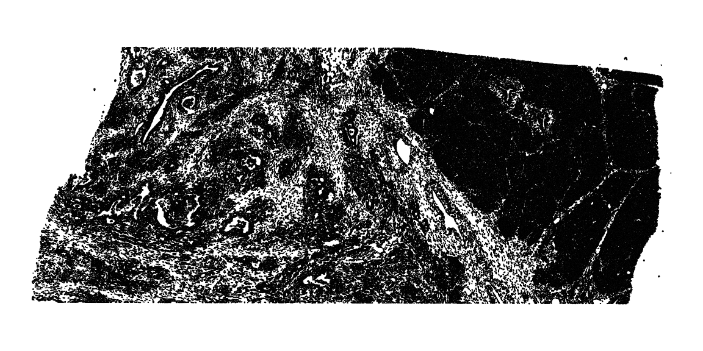
Plot the nuclei
plotGeometry(sfe, colGeometryName = "nucSeg")Plot cell density in space
plotCellBin2D(sfe, binwidth = 50, hex = TRUE)There are clearly two different regions, one with high cell density, the other with lower density. They also seem to have very different spatial structures. Just like finding the study area in geography, e.g. a given metropolitan area, it may be interesting to perform spatial analyses on different regions of the tissue separately or use the different region annotations as covariates.
Plot total transcript density
plotTxBin2D(data_dir = "xenium2_pancreas", tech = "Xenium", binwidth = 50,
flip = TRUE, hex = TRUE)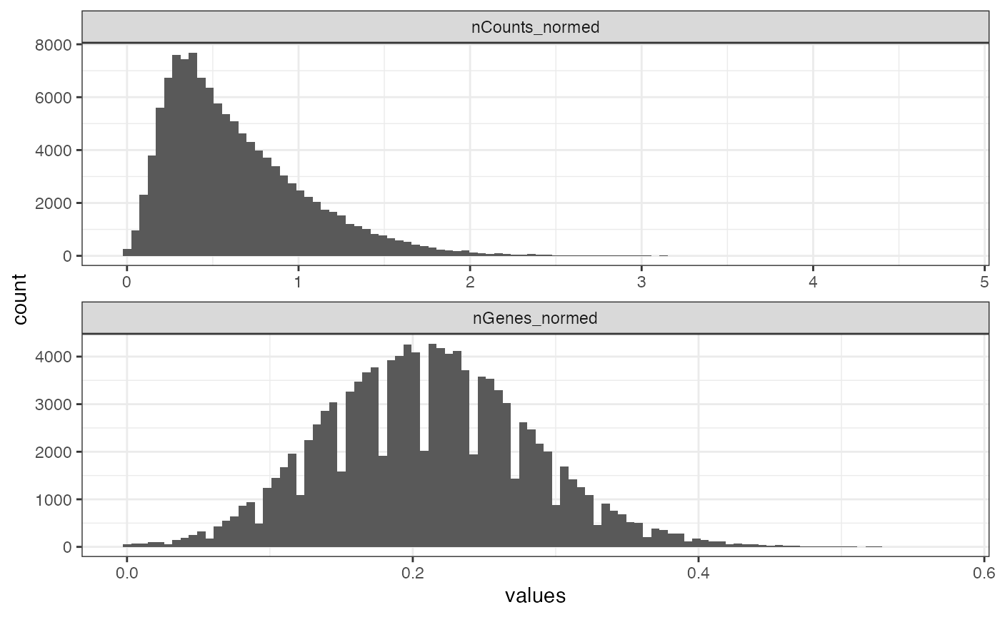
Cool, so the region with higher cell density also has higher transcript density, but in the sparse region, there are regions of higher transcript density but not higher cell density.
Plot the images; the image has 4 channels, which are DAPI, ATP1A1/CD45/E-Cadherin, 18S, and AlphaSMA/Vimentin, in this order. The images are pyramids with multiple resolutions; some applications would not require the highest resolution. The file for each channel is around 370 MB. Only the metadata is read in R and only the relevant portion of the image at the highest resolution necessary is loaded into memory when needed, say when plotting.
getImg(sfe)
#> X: 34155, Y: 13770, C: 4, Z: 1, T: 1, BioFormatsImage
#> imgSource():
#> /home/runner/work/voyager/voyager/vignettes/xenium2_pancreas/morphology_focus/morphology_focus_0000.ome.tifThere are 4 image files, each for one channel, though the XML metadata of the files connect them together so BioFormats treats them as one file.
dir_tree(dirname(imgSource(getImg(sfe))))
#> /home/runner/work/voyager/voyager/vignettes/xenium2_pancreas/morphology_focus
#> ├── morphology_focus_0000.ome.tif
#> ├── morphology_focus_0001.ome.tif
#> ├── morphology_focus_0002.ome.tif
#> └── morphology_focus_0003.ome.tifThe image can be plotted with plotImage() in
Voyager, but only up to 3 channels can be ploted at the
same time. Say plot 18S (red), ATP1A1/CD45/E-Cadherin (green), and DAPI
(blue). These are specified in the channel argument, using
channel indices. When using 3 channels, by default the indices
correspond to R, G, and B channels in this order. The
normalize_channels argument determines if the channels
should be normalized individually in case the different channels have
different dynamic ranges. We recommend setting it to TRUE
for fluorescent images where each channel is separated separately using
different fluorophores but not the bright field images where the RGB
channels are imaged simultaneously.
plotImage(sfe, image_id = "morphology_focus", channel = 3:1, show_axes = TRUE,
dark = TRUE, normalize_channels = TRUE)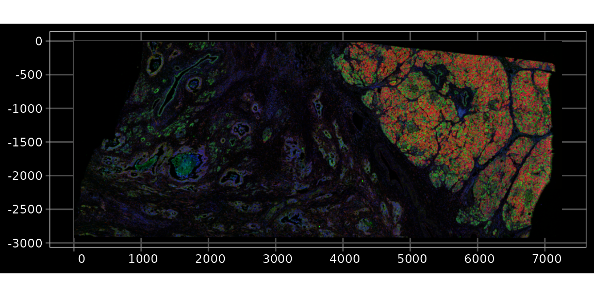
Zoom into smaller regions, one in the dense region, another in the sparser region
bbox1 <- c(xmin = 5500, xmax = 6000, ymin = -1250, ymax = -750)
bbox2 <- c(xmin = 1500, xmax = 2000, ymin = -2000, ymax = -1500)Plot the bounding boxes in the full image
bboxes_sf <- c(st_as_sfc(st_bbox(bbox1)), st_as_sfc(st_bbox(bbox2)))
plotImage(sfe, image_id = "morphology_focus", channel = 3:1, show_axes = TRUE,
dark = TRUE, normalize_channels = TRUE) +
geom_sf(data = bboxes_sf, fill = NA, color = "white", linewidth = 0.5)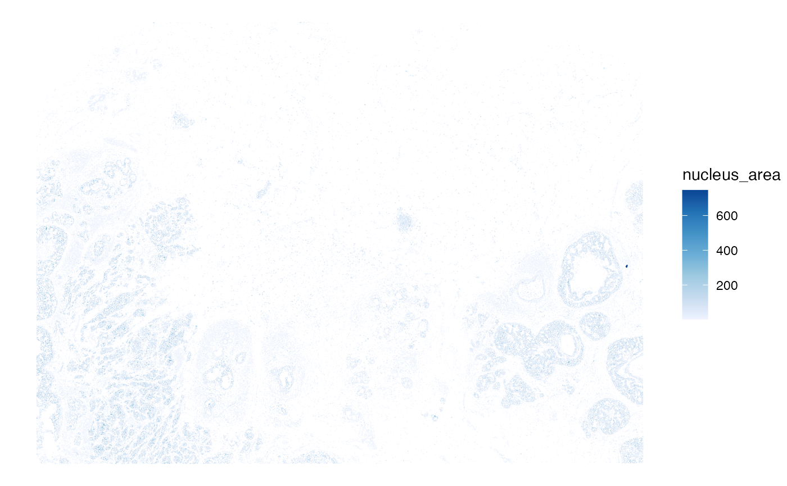
plotImage(sfe, image_id = "morphology_focus", channel = 3:1,
bbox = bbox1, normalize_channels = TRUE)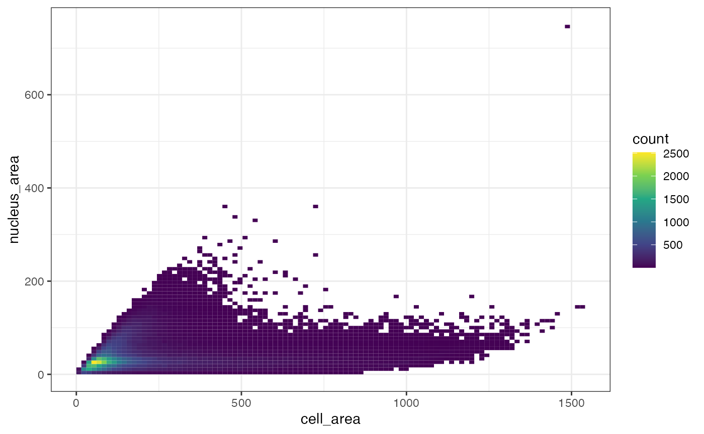
plotImage(sfe, image_id = "morphology_focus", channel = 3:1,
bbox = bbox2, normalize_channels = TRUE)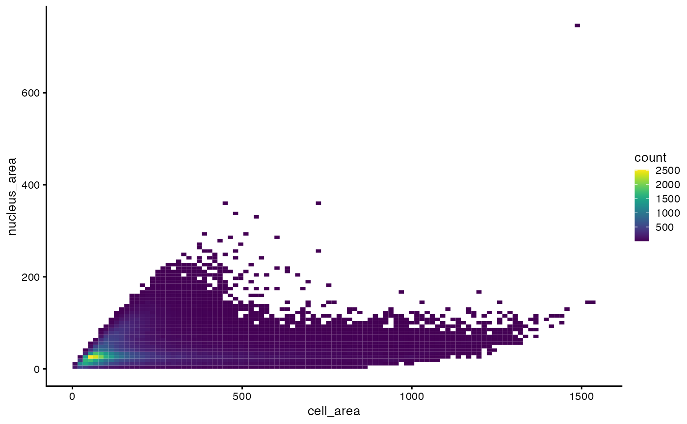
Since we’re using the RGB channels for color, this is not colorblind friendly. Plot the channels separately to be colorblind friendly:
p1 <- plotImage(sfe, image_id = "morphology_focus", channel = 1,
bbox = bbox2) +
ggtitle("DAPI")
p2 <- plotImage(sfe, image_id = "morphology_focus", channel = 2,
bbox = bbox2) +
ggtitle("ATP1A1/CD45/E-Cadherin")
p1 + p2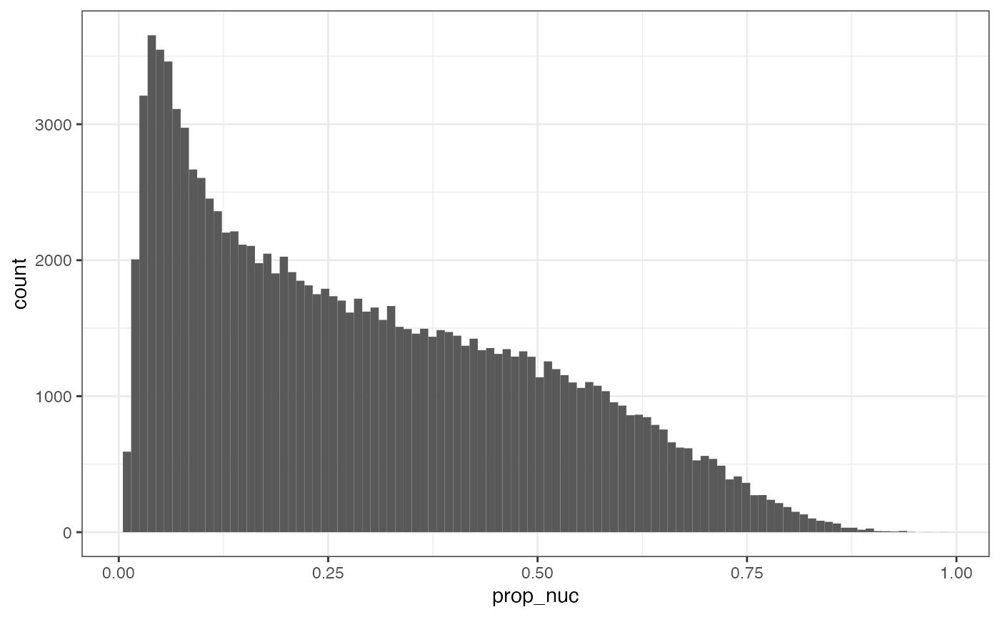
We can also use a different color map for single channels, such as viridis
plotImage(sfe, image_id = "morphology_focus", channel = 1,
bbox = bbox2, palette = viridis_pal()(255))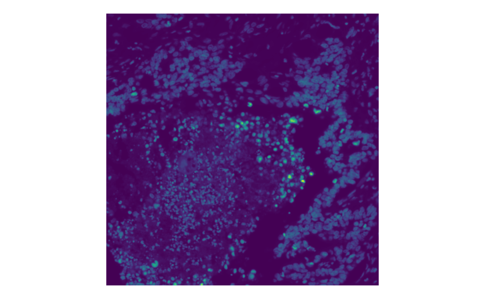
We can also plot the cell and nuclei geometries on top of the images
plotGeometry(sfe, colGeometryName = "cellSeg", fill = FALSE, dark = TRUE,
image_id = "morphology_focus",
channel = 3:1, bbox = bbox1, normalize_channels = TRUE)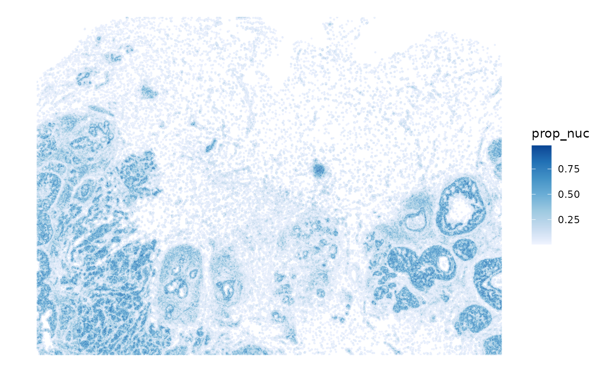
plotGeometry(sfe, colGeometryName = "nucSeg", fill = FALSE, dark = TRUE,
image_id = "morphology_focus",
channel = 3:1, bbox = bbox1, normalize_channels = TRUE)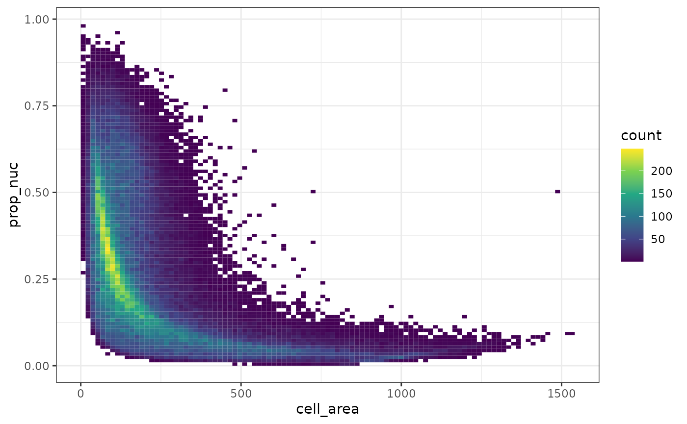
Plot cells and nuclei together; since there’re still quite a lot of
cells in that bounding box and the plot looks busy, we can use a even
smaller bounding box to plus both cells and nuclei. The
colGeometryName argument can accept a vector of names of
colGeometries in order to plot multiple geometries
together, such as cells and nuclei.
bbox3 <- c(xmin = 5750, xmax = 6000, ymin = -1100, ymax = -850)
plotGeometry(sfe, colGeometryName = c("cellSeg", "nucSeg"), fill = FALSE,
dark = TRUE, image_id = "morphology_focus",
channel = 3:1, bbox = bbox3, normalize_channels = TRUE)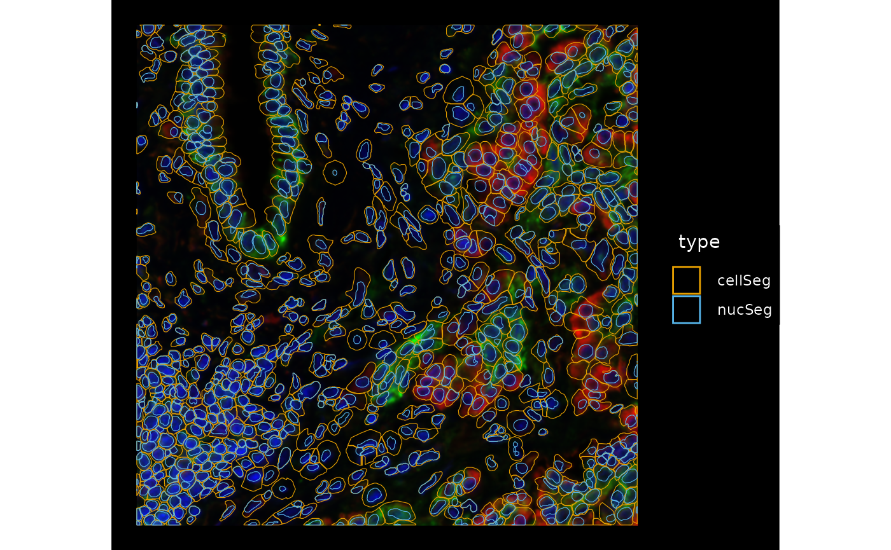
Quality control
Negative controls
Some of the features are not genes but negative controls
unique(rowData(sfe)$Type)
#> [1] "Gene Expression" "Negative Control Probe"
#> [3] "Negative Control Codeword" "Unassigned Codeword"According to the Xenium paper (Janesick2022-rp?), there are 3 types of controls:
- probe controls to assess non-specific binding to RNA,
- decoding controls to assess misassigned genes, and
- genomic DNA (gDNA) controls to ensure the signal is from RNA.
The paper does not explain in detail how those control probes were designed. The negative controls give us a sense of the false positive rate.
This should be number 1, the probe control
This should be number 2, the decoding control
Also make an indicator of whether a feature is any sort of negative control
is_any_neg <- is_blank | is_neg | is_neg2The addPerCellQCMetrics() function in the
scuttle package can conveniently add transcript counts,
proportion of total counts, and number of features detected for any
subset of features to the SCE object. Here we do this for the SFE
object, as SFE inherits from SCE.
sfe <- addPerCellQCMetrics(sfe, subsets = list(unassigned = is_blank,
negProbe = is_neg,
negCodeword = is_neg2,
any_neg = is_any_neg))
names(colData(sfe))
#> [1] "transcript_counts" "control_probe_counts"
#> [3] "control_codeword_counts" "unassigned_codeword_counts"
#> [5] "deprecated_codeword_counts" "total_counts"
#> [7] "cell_area" "nucleus_area"
#> [9] "sample_id" "sum"
#> [11] "detected" "subsets_unassigned_sum"
#> [13] "subsets_unassigned_detected" "subsets_unassigned_percent"
#> [15] "subsets_negProbe_sum" "subsets_negProbe_detected"
#> [17] "subsets_negProbe_percent" "subsets_negCodeword_sum"
#> [19] "subsets_negCodeword_detected" "subsets_negCodeword_percent"
#> [21] "subsets_any_neg_sum" "subsets_any_neg_detected"
#> [23] "subsets_any_neg_percent" "total"Next we plot the proportion of transcript counts coming from any negative control.
cols_use <- names(colData(sfe))[str_detect(names(colData(sfe)), "_percent$")]
plotColDataHistogram(sfe, cols_use, bins = 100)
#> Warning: Removed 2032 rows containing non-finite outside the scale range
#> (`stat_bin()`).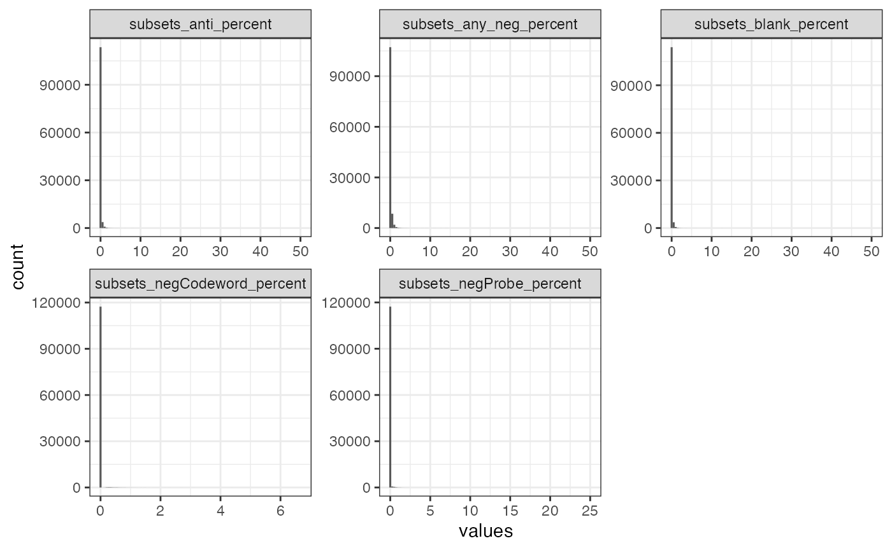
The histogram is dominated by the bin at zero and there are some extreme outliers too few to be seen but evident from the scale of the x axis. We also plot the histogram only for cells with at least 1 count from a negative control. The NA’s come from cells that got segmented but have no transcripts detected.
plotColDataHistogram(sfe, cols_use, bins = 100) +
scale_x_log10() +
annotation_logticks(sides = "b")
#> Warning in scale_x_log10(): log-10 transformation introduced
#> infinite values.
#> Warning: Removed 561200 rows containing non-finite outside the scale range
#> (`stat_bin()`).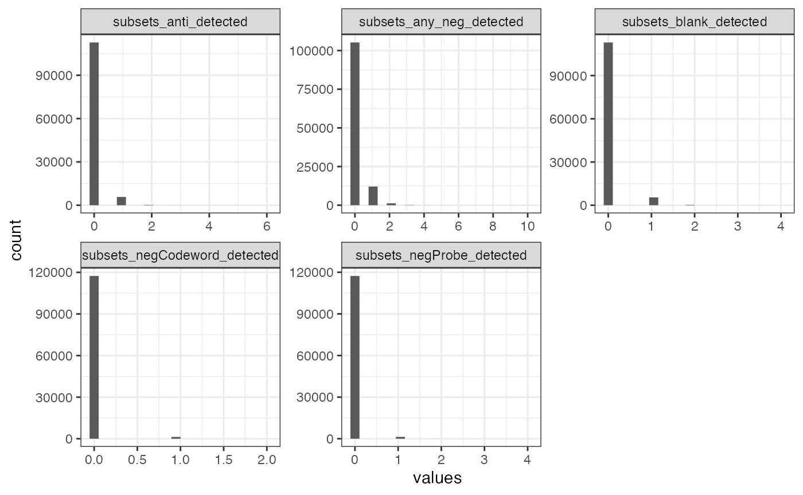
For the most part cells have less than 10% of spots assigned to the negative controls.
Next we plot the distribution of the number of negative control counts per cell:
cols_use <- names(colData(sfe))[str_detect(names(colData(sfe)), "_sum$")]
plotColDataHistogram(sfe, cols_use, bins = 20, ncol = 2) +
# Avoid decimal breaks on x axis unless there're too few breaks
scale_x_continuous(breaks = scales::breaks_extended(Q = c(1,2,5))) +
scale_y_log10() +
annotation_logticks(sides = "l")
#> Warning in scale_y_log10(): log-10 transformation introduced
#> infinite values.
#> Warning: Removed 69 rows containing missing values or values outside the scale range
#> (`geom_bar()`).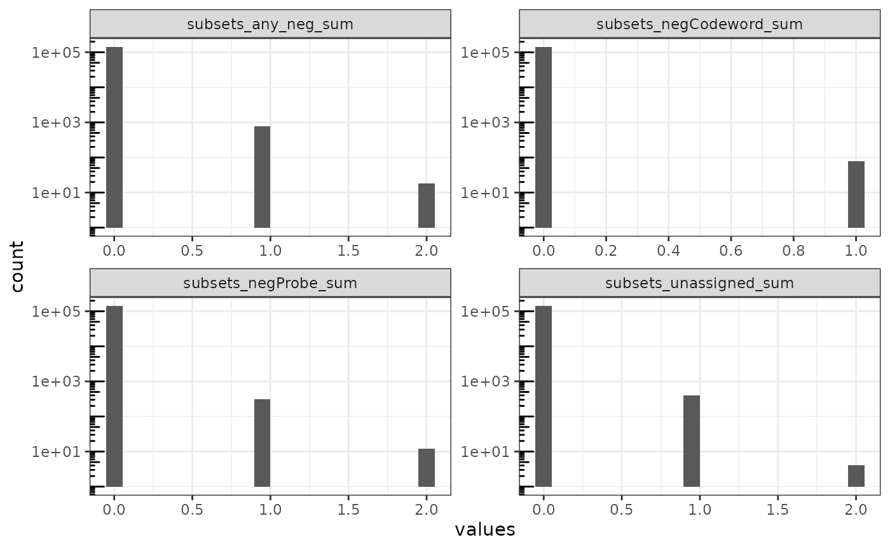
tx <- read_parquet("xenium2_pancreas/transcripts.parquet")The counts are low, mostly zero, but there are some cells with up to 2 counts of all types aggregated. Then the outlier with 30% of counts from negative controls must have very low total real transcript counts to begin with. The negative controls indicate the prevalence of false positives. Here we have only about 2000 out of over 140,000 that have negative control spots detected. About 0.338% are negative control spots, so false positive rate is low.
names(colData(sfe))
#> [1] "transcript_counts" "control_probe_counts"
#> [3] "control_codeword_counts" "unassigned_codeword_counts"
#> [5] "deprecated_codeword_counts" "total_counts"
#> [7] "cell_area" "nucleus_area"
#> [9] "sample_id" "sum"
#> [11] "detected" "subsets_unassigned_sum"
#> [13] "subsets_unassigned_detected" "subsets_unassigned_percent"
#> [15] "subsets_negProbe_sum" "subsets_negProbe_detected"
#> [17] "subsets_negProbe_percent" "subsets_negCodeword_sum"
#> [19] "subsets_negCodeword_detected" "subsets_negCodeword_percent"
#> [21] "subsets_any_neg_sum" "subsets_any_neg_detected"
#> [23] "subsets_any_neg_percent" "total"Where are cells with higher proportion of negative control spots (i.e. low total counts and have negative control spots detected, >10% here) located in space?
data("ditto_colors")
sfe$more_neg <- sfe$subsets_any_neg_percent > 10
plotSpatialFeature(sfe, "subsets_any_neg_sum", colGeometryName = "cellSeg",
show_axes = TRUE) +
geom_sf(data = SpatialFeatureExperiment::centroids(sfe)[sfe$more_neg,],
size = 0.5, color = ditto_colors[1]) +
theme(legend.position = "bottom")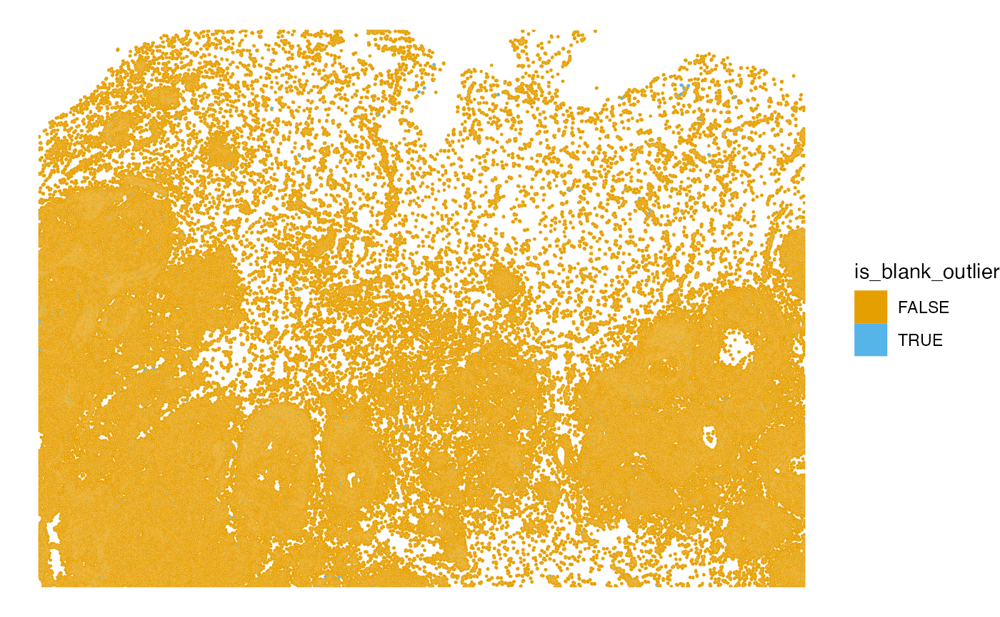
Cells that have any negative control spots appear to be randomly distributed in space, but cells that have higher proportion of negative control seem to be few and over-represented in the less dense area, because the proportion is higher when total transcript counts are lower to begin with.
Where are negative control spots located?
tx |>
filter(feature_name %in% rownames(sfe)[is_any_neg]) |>
ggplot(aes(x_location, -y_location)) +
geom_bin2d(binwidth = 50) +
scale_fill_distiller(palette = "Blues", direction = 1) +
labs(x = NULL, y = NULL)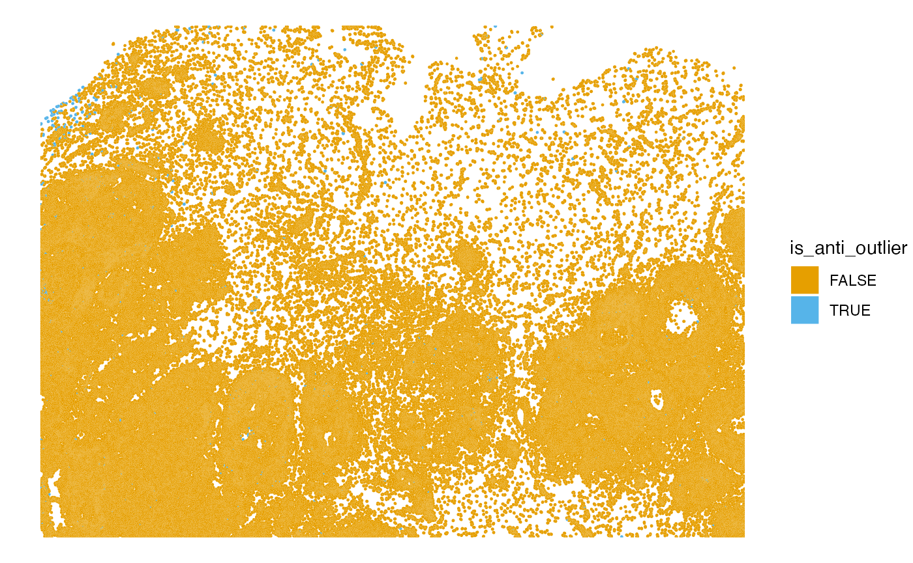
Generally there are more negative control spots in the region with
higher cell and transcript density, but especially regions with high
cell density, which is not surprising. There don’t visually seem to be
regions with more negative control spots not accounted for by cell and
transcript density. In contrast, the first Xenium preview data from 2022
has a region in the top left corner with more negative control probes
detected that seems like an artifact (see
JanesickBreastData()).
rm(tx)Cells
Some QC metrics are precomputed and are stored in
colData
names(colData(sfe))
#> [1] "transcript_counts" "control_probe_counts"
#> [3] "control_codeword_counts" "unassigned_codeword_counts"
#> [5] "deprecated_codeword_counts" "total_counts"
#> [7] "cell_area" "nucleus_area"
#> [9] "sample_id" "sum"
#> [11] "detected" "subsets_unassigned_sum"
#> [13] "subsets_unassigned_detected" "subsets_unassigned_percent"
#> [15] "subsets_negProbe_sum" "subsets_negProbe_detected"
#> [17] "subsets_negProbe_percent" "subsets_negCodeword_sum"
#> [19] "subsets_negCodeword_detected" "subsets_negCodeword_percent"
#> [21] "subsets_any_neg_sum" "subsets_any_neg_detected"
#> [23] "subsets_any_neg_percent" "total"
#> [25] "more_neg"Since there’re more cells, it would be better to plot the tissue larger, so we’ll plot the histogram of QC metrics and the spatial plots separately, unlike in the CosMx vignette.
n_panel <- sum(!is_any_neg)
sfe$nCounts <- colSums(counts(sfe)[!is_any_neg,])
sfe$nGenes <- colSums(counts(sfe)[!is_any_neg,] > 0)
colData(sfe)$nCounts_normed <- sfe$nCounts/n_panel
colData(sfe)$nGenes_normed <- sfe$nGenes/n_panelHere we divided the total number of transcript molecules detected
from genes (nCounts) and the number of genes detected
(nGenes) by the total number of genes probed, so this
histogram is comparable to those from other smFISH-based datasets.
plotColDataHistogram(sfe, c("nCounts", "nGenes"))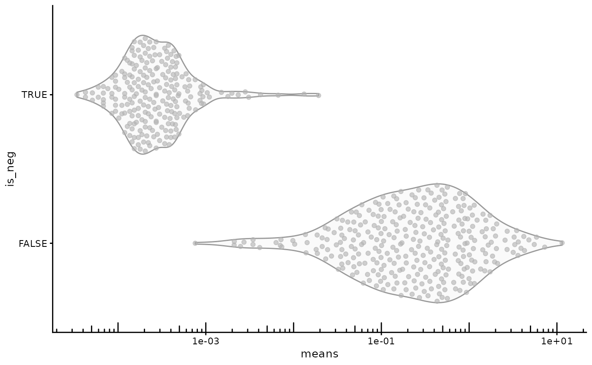
There’re weirdly some discrete values of the number of genes detected, which excludes negative controls.
plotColDataHistogram(sfe, c("nCounts_normed", "nGenes_normed"))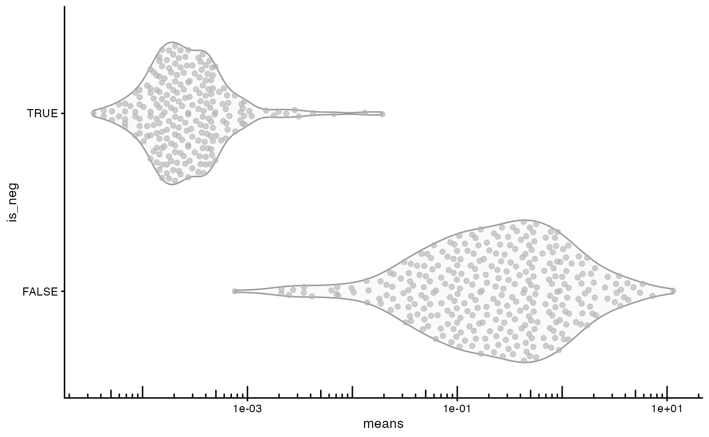
Compared to the FFPE CosMX non-small cell lung cancer dataset, fewer transcripts per gene on average and a smaller proportion of all genes are detected in this dataset, which is also FFPE. However, this should be interpreted with caution, since these two datasets are from different tissues and have different gene panels, so this may or may not indicate that Xenium has better detection efficiency than CosMX. See (Wang et al. 2023; Cook et al. 2023; Rademacher et al. 2024) for systematic comparisons of different imaging based technologies with the same tissue.
plotSpatialFeature(sfe, "nCounts", colGeometryName = "cellSeg")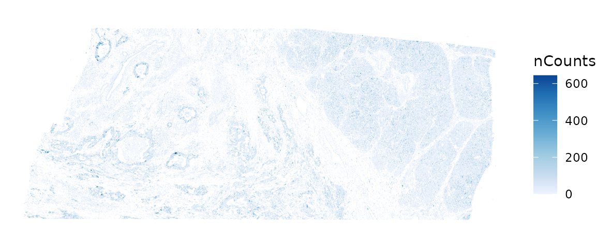
plotSpatialFeature(sfe, "nGenes", colGeometryName = "cellSeg")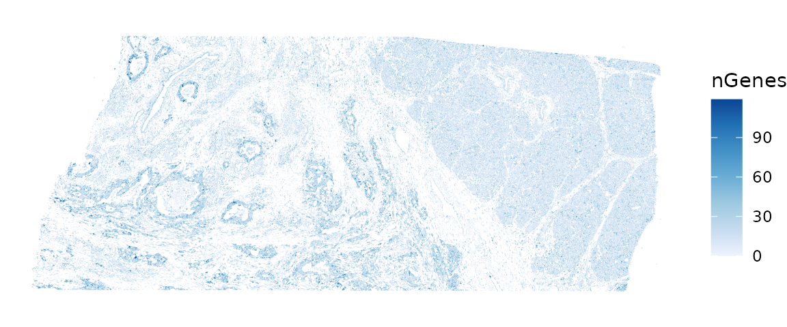
These plots clearly show that nCounts and nGenes are spatially structured and may be biologically relevant.
A standard examination is to look at the relationship between nCounts and nGenes:
plotColData(sfe, x="nCounts", y="nGenes", bins = 70) +
scale_fill_distiller(palette = "Blues", direction = 1)
#> Scale for fill is already present.
#> Adding another scale for fill, which will replace the existing scale.Here we plot the distribution of cell area
plotColDataHistogram(sfe, c("cell_area", "nucleus_area"), scales = "free_y")
#> Warning: Removed 4171 rows containing non-finite outside the scale range
#> (`stat_bin()`).
There’s a very long tail. The nuclei are much smaller than the cells.
How is cell area distributed in space?
plotSpatialFeature(sfe, "cell_area", colGeometryName = "cellSeg",
show_axes = TRUE)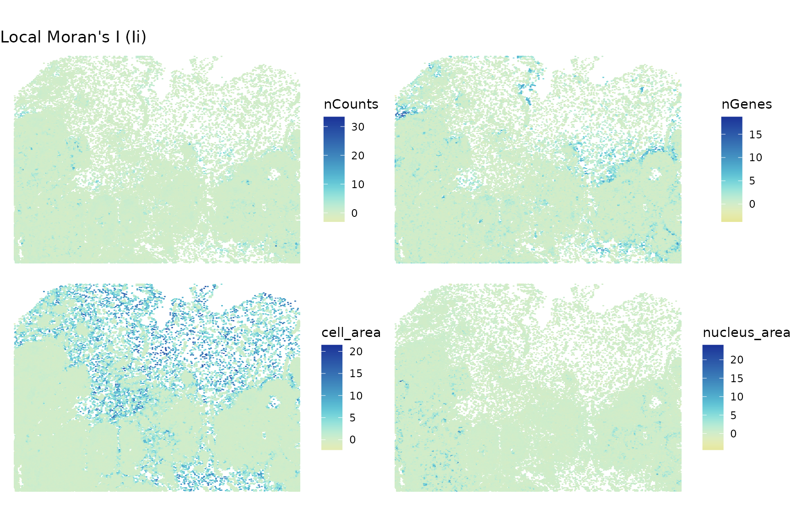
The largest cells tend to be in the sparse area. This may be biological or an artifact of the cell segmentation algorithm or both.
Here the nuclei segmentations are plotted instead of cell segmentation.
plotSpatialFeature(sfe, "nucleus_area", colGeometryName = "nucSeg",
show_axes = TRUE)
Zoom into smaller regions to see the nature of the very large cells
bbox3 <- c(xmin = 1350, xmax = 1550, ymin = -1750, ymax = -1550)
bbox4 <- c(xmin = 3400, xmax = 3600, ymin = -2900, ymax = -2700)
plotGeometry(sfe, colGeometryName = c("cellSeg", "nucSeg"), fill = FALSE,
dark = TRUE, image_id = "morphology_focus",
channel = 3:1, bbox = bbox3, normalize_channels = TRUE)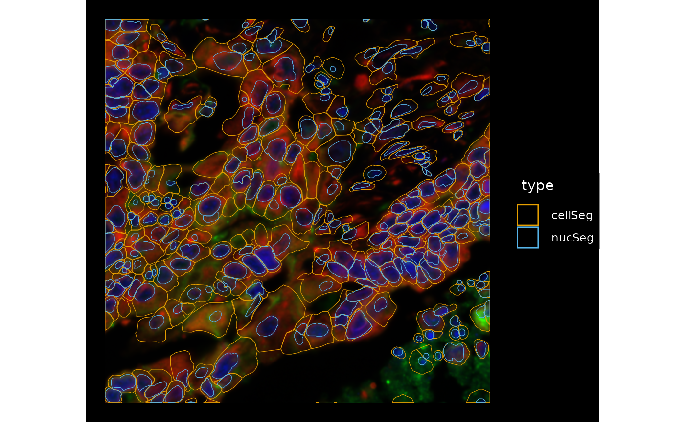
plotGeometry(sfe, colGeometryName = c("cellSeg", "nucSeg"), fill = FALSE,
dark = TRUE, image_id = "morphology_focus",
channel = 3:1, bbox = bbox4, normalize_channels = TRUE)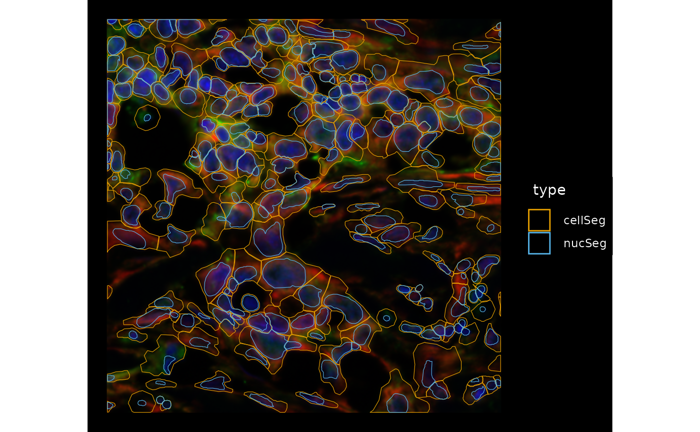
In most cases, the large cells don’t immediately look like artifacts of segmentation, so maybe don’t remove them for QC purposes. Meanwhile we see different morphologies in the cells and nuclei which can be interesting to further explore. There are also some cells that don’t have nuclei which may have nuclei in a different z-plane or may be false positives, and maybe some false negatives in regions with fluorescence and seemingly nuclei but not cell segmentation.
Next we calculate the proportion of cell in this z-plane taken up by the nucleus, and examine the distribution:
colData(sfe)$prop_nuc <- sfe$nucleus_area / sfe$cell_area
summary(sfe$prop_nuc)
#> Min. 1st Qu. Median Mean 3rd Qu. Max. NA's
#> 0.029 0.318 0.435 0.451 0.564 1.000 4171
plotColDataHistogram(sfe, "prop_nuc")
#> Warning: Removed 4171 rows containing non-finite outside the scale range
#> (`stat_bin()`).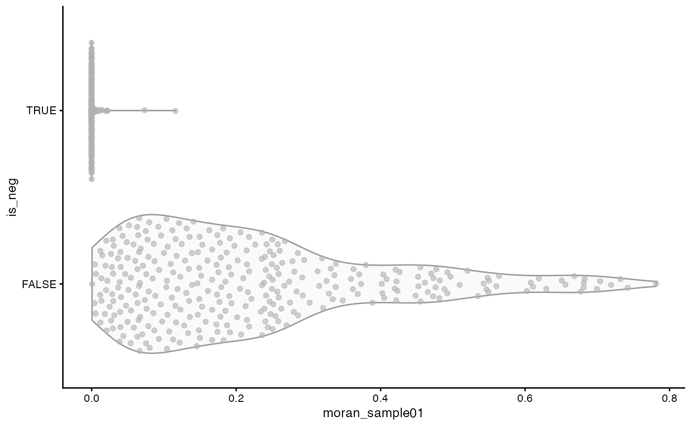
The NA’s are cells that don’t have nuclei detected. There are also nearly 2500 cells entirely taken up the their nuclei, which may be due to cell type or false negative in segmenting the rest of the cell.
Here we plot the nuclei proportion in space:
plotSpatialFeature(sfe, "prop_nuc", colGeometryName = "cellSeg")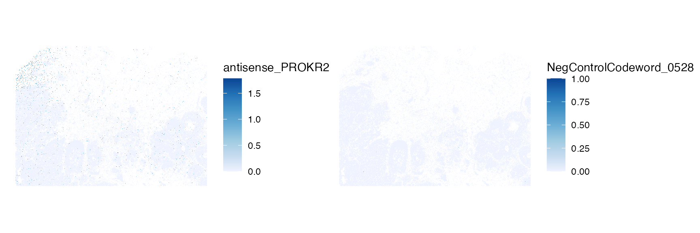
Cells in some histological regions have larger proportions occupied by the nuclei. It is interesting to check, controlling for cell type, how cell area, nucleus area, and the proportion of cell occupied by nucleus relate to gene expression. However, a problem in performing such an analysis is that cell segmentation is only available for one z-plane here and these areas also relate to where this z-plane intersects each cell.
Does cell area relate to nCounts, nucleus area,
proportion of area taken up by nucleus, and so on? Here we plot how each
pair of variables relate to each other in a matrix plot using the ggforce
package.
cols_use <- c("nCounts", "nGenes", "cell_area", "nucleus_area", "prop_nuc")
df <- colData(sfe)[,cols_use] |> as.data.frame()
ggplot(df) +
geom_bin2d(aes(x = .panel_x, y = .panel_y), bins = 30) +
geom_autodensity(fill = "gray90", color = "gray70", linewidth = 0.2) +
facet_matrix(vars(tidyselect::everything()), layer.diag = 2) +
scale_fill_distiller(palette = "Blues", direction = 1)
#> Warning: Removed 58394 rows containing non-finite outside the scale range
#> (`stat_bin2d()`).
#> Warning: Removed 8342 rows containing non-finite outside the scale range
#> (`stat_autodensity()`).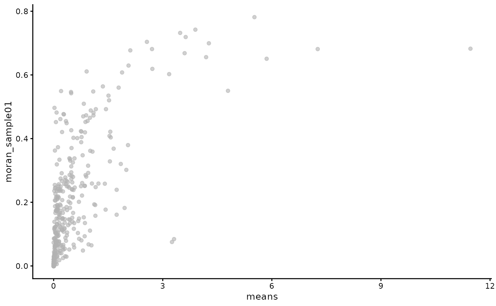
Cool, so, generally, nCounts, nGenes, cell
area, and nucleus area positively correlate with each other, but the
proportion of cell area taken up by the nucleus doesn’t seem to
correlate with the other variables.
sfe$has_nuclei <- !is.na(sfe$nucleus_area)
plotColData(sfe, y = "has_nuclei", x = "cell_area",
point_fun = function(...) list())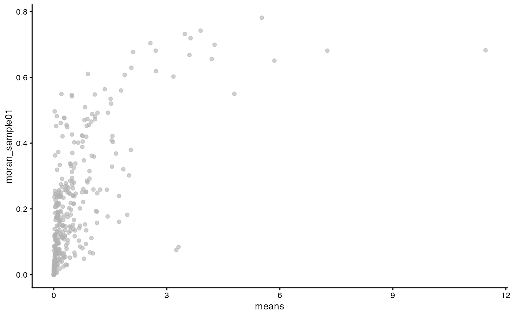
It seems that cells that don’t have nuclei detected tend to be smaller, probably because less of them are captured in this tissue section when their nuclei are not in this section. Where are the cells without nuclei distributed in space?
plotSpatialFeature(sfe, "has_nuclei", colGeometryName = "cellSeg",
show_axes = TRUE) +
# To highlight the cells that don't have nuclei
geom_sf(data = SpatialFeatureExperiment::centroids(sfe)[!sfe$has_nuclei,],
color = ditto_colors[1], size = 0.3)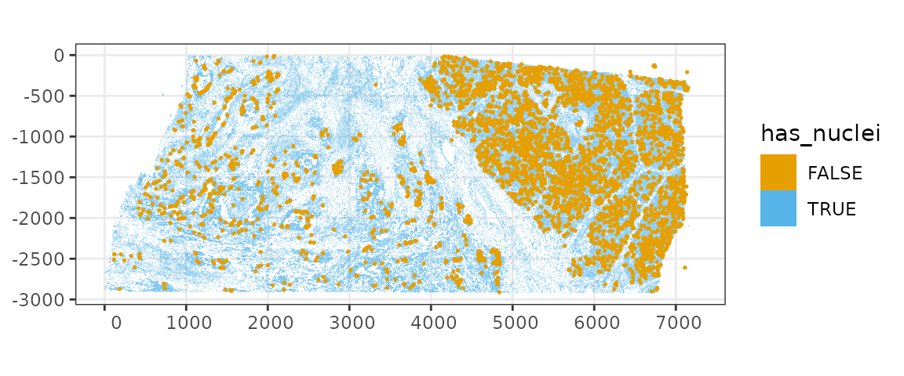
It seems that there are more cells without nuclei in regions with higher cell density; would be interesting to do spatial point process analysis. Zoom into a smaller region to inspect, especially the cells outside the main piece of tissue:
bbox5 <- c(xmin = 6400, xmax = 6800, ymin = -300, ymax = -50)
bbox6 <- c(xmin = 600, xmax = 1000, ymin = -600, ymax = -300)
bbox7 <- c(xmin = 6800, xmax = 7200, ymin = -2900, ymax = -2500)
plotGeometry(sfe, colGeometryName = c("cellSeg", "nucSeg"), fill = FALSE,
dark = TRUE, image_id = "morphology_focus", show_axes = TRUE,
channel = 3:1, bbox = bbox5, normalize_channels = TRUE)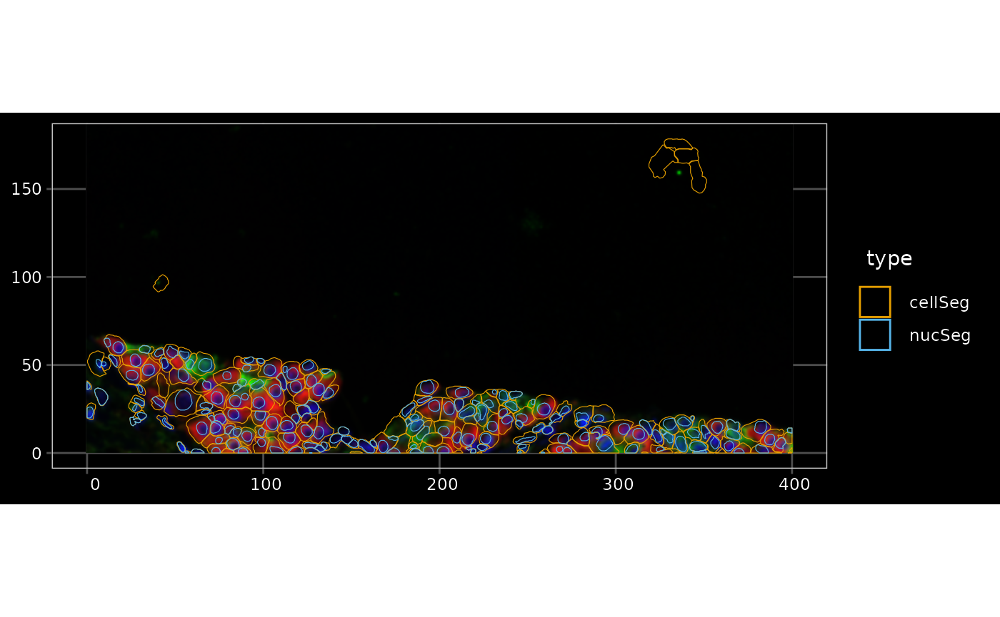
plotGeometry(sfe, colGeometryName = c("cellSeg", "nucSeg"), fill = FALSE,
dark = TRUE, image_id = "morphology_focus", show_axes = TRUE,
channel = 3:1, bbox = bbox6, normalize_channels = TRUE)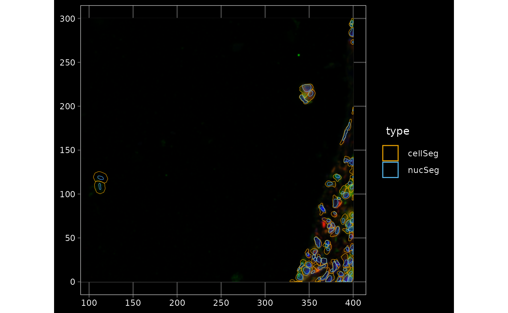
plotGeometry(sfe, colGeometryName = c("cellSeg", "nucSeg"), fill = FALSE,
dark = TRUE, image_id = "morphology_focus", show_axes = TRUE,
channel = 3:1, bbox = bbox7, normalize_channels = TRUE)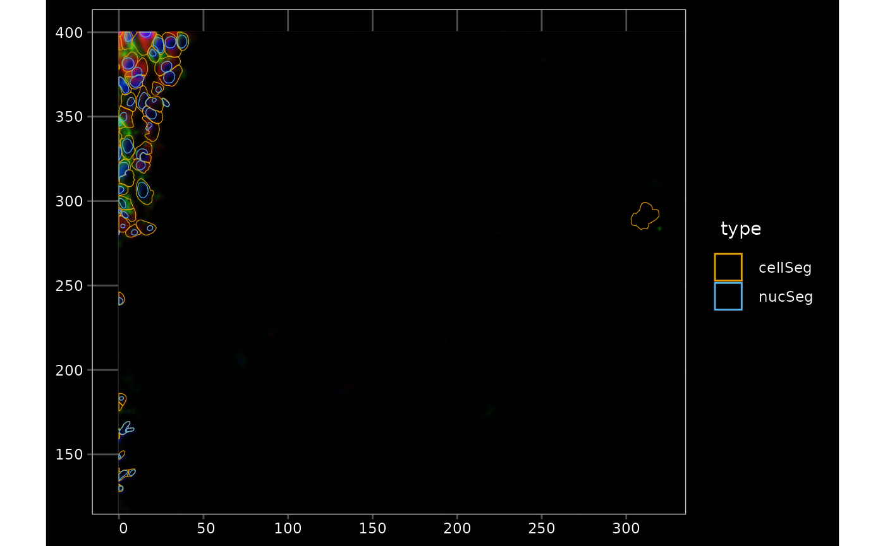
Here in QC we are looking for low quality cells. From what we’ve explored so far, cells with negative control counts and exceptionally large cells might not be suspect, but cells far outside the tissue are suspect. For some types of spatial neighborhood graphs, such as the k nearest neighbor graph, these cells will also affect spatial analysis. So here we remove those cells. Here we compute a k nearest neighbor graph with k = 5 and remove cells with neighbors that are too far away.
g <- findKNN(spatialCoords(sfe)[,1:2], k = 5, BNPARAM = AnnoyParam())
max_dist <- rowMaxs(g$distance)
data.frame(max_dist = max_dist) |>
ggplot(aes(max_dist)) +
geom_histogram(bins = 100) +
scale_y_continuous(transform = "log1p") +
scale_x_continuous(breaks = breaks_pretty()) +
annotation_logticks(sides = "l")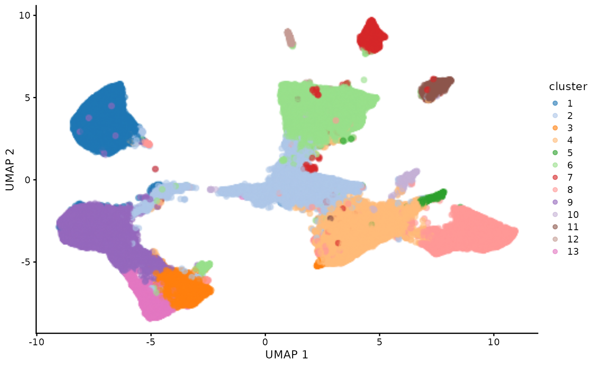
Also look at minimum distance between the neighbors to find outlying single cells that may be less far from the tissue
min_dist <- rowMins(g$distance)
data.frame(min_dist = min_dist) |>
ggplot(aes(min_dist)) +
geom_histogram(bins = 100) +
scale_y_continuous(transform = "log1p") +
scale_x_continuous(breaks = breaks_pretty()) +
annotation_logticks(sides = "l")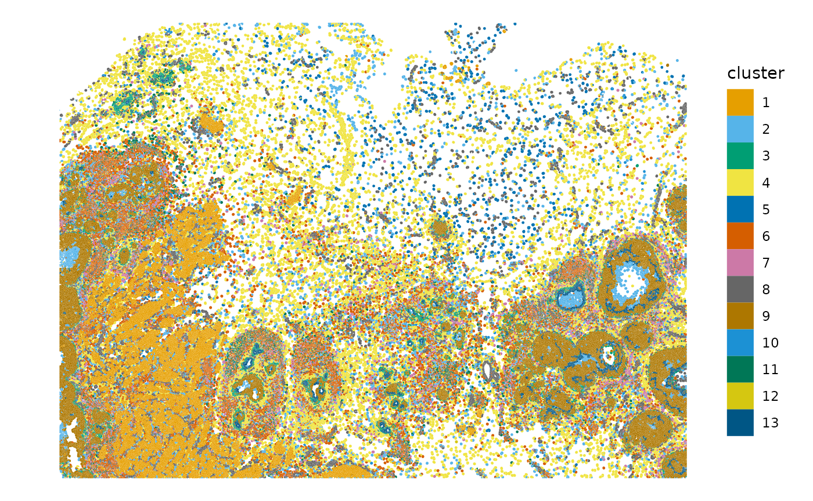
There’s a long tail, which must be the small clusters of cells away from the tissue. Say use a cutoff of 60 microns, and see where those cells are.
sfe$main_tissue <- !(max_dist > 60 | min_dist > 50)
plotSpatialFeature(sfe, "main_tissue", colGeometryName = "cellSeg",
show_axes = TRUE) +
# To highlight the outliers
geom_sf(data = SpatialFeatureExperiment::centroids(sfe)[!sfe$main_tissue,],
color = ditto_colors[1], size = 0.3)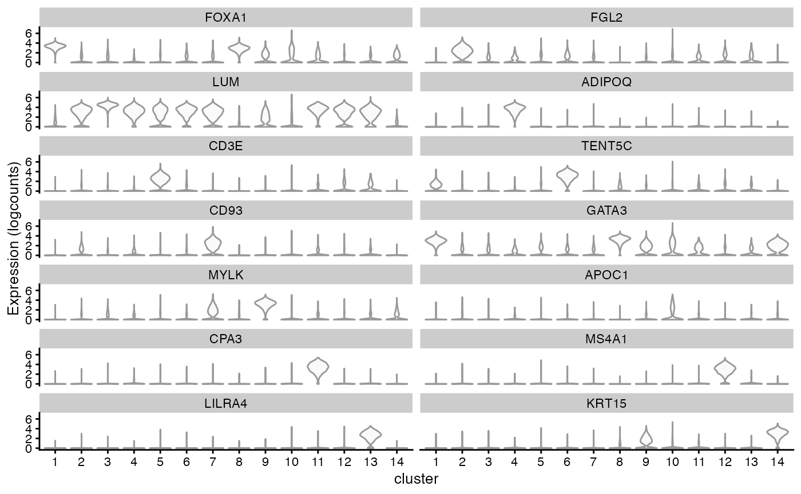
To be more fastidious, I can also compare the max neighbor distance of each cell to those of its neighbors in order to account for cell density in different parts of the tissue, and to extract data from the image to remove cells that lack fluorescent signals. Here we remove the cells away from the main tissue, cells that have very low total gene expression, cells that are too small to make sense, and genes that are not detected.
plotColDataHistogram(sfe, c("nCounts", "cell_area")) +
scale_x_log10() +
annotation_logticks(sides = "b")
#> Warning in scale_x_log10(): log-10 transformation introduced
#> infinite values.
#> Warning: Removed 508 rows containing non-finite outside the scale range
#> (`stat_bin()`).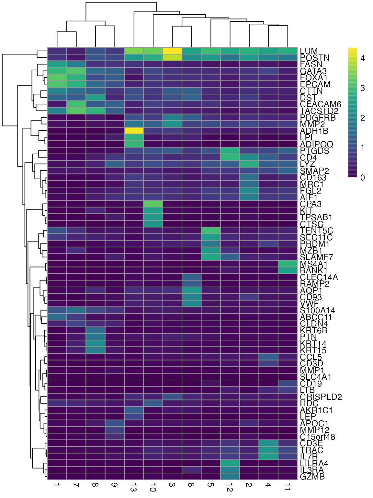
The x axis is log transformed to better see the small values, and there’s no obvious outlier. Say use an arbitrary cutoff of 5 for nCounts
Genes
Here we look at the mean and variance of each gene
Real genes generally have higher mean expression across cells than negative controls. This is the mean of each gene across cells.
rowData(sfe)$is_neg <- rowData(sfe)$Type != "Gene Expression"
plotRowData(sfe, x = "means", y = "is_neg") +
scale_y_log10() +
annotation_logticks(sides = "b")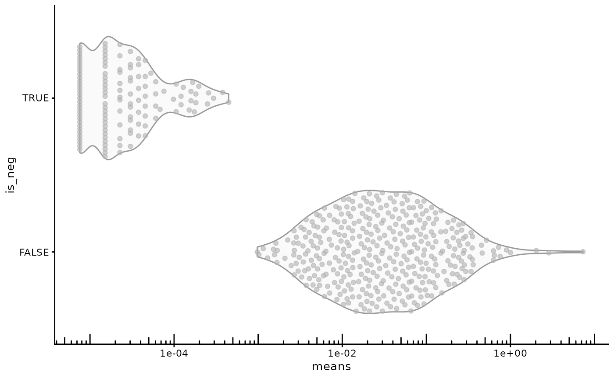
Here the real genes and negative controls are plotted in different colors
plotRowData(sfe, x="means", y="vars", color_by = "is_neg") +
geom_abline(slope = 1, intercept = 0, color = "red") +
scale_x_log10() + scale_y_log10() +
annotation_logticks() +
coord_equal() +
labs(color = "Negative control")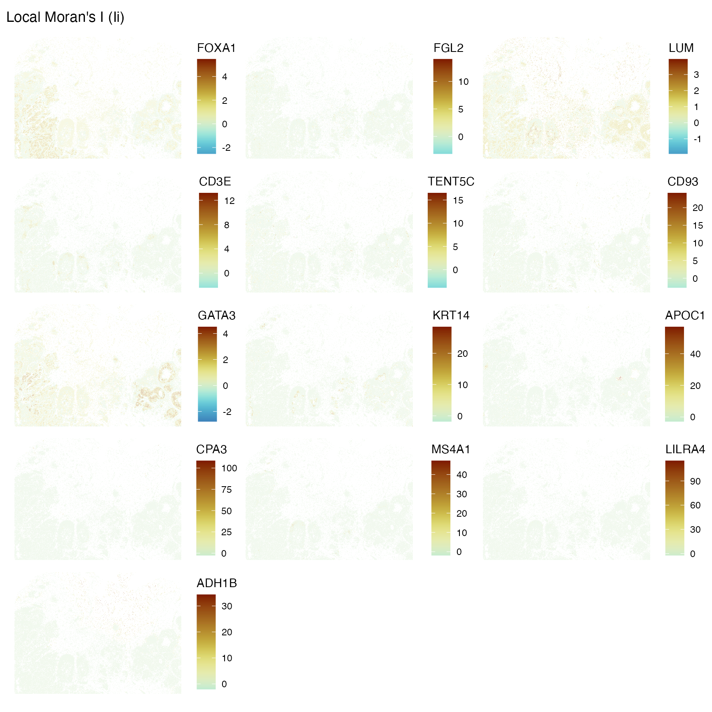
The red line is expected if the data follows a Poisson distribution. Negative controls and real genes form mostly separate clusters. Negative controls stick close to the line, while real genes are overdispersed. Unlike in the CosMX dataset, the negative controls don’t seem overdispersed. Overdispersion in gene expression can not only be caused by transcription bursts and cell type heterogeneity, but also by both positive and negative spatial autocorrelation (Chun2018-ar?; Griffith2011-lx?).
Spatial autocorrelation of QC metrics
There’s a sparse and a dense region. This poses the question of what type of neighborhood graph to use, e.g. it is conceivable that cells in the sparse region should just be singletons. Furthermore, it is unclear what the length scale of their influence might be. It might depend on the cell type and how contact and secreted signals are used in the cell type, and length scale of the influence. If k nearest neighbors are used, then the neighbors in the dense region are much closer together than those in the sparse region. If distance based neighbors are used, then cells in the dense region will have more neighbors than cells in the sparse region, and the sparse region can break into multiple compartments if the distance cutoff is not long enough.
For the purpose of demonstration, we use k nearest neighbors with , with inverse distance weighting. Note that using more neighbors leads to longer computation time of spatial autocorrelation metrics.
colGraph(sfe, "knn5") <- findSpatialNeighbors(sfe, method = "knearneigh",
dist_type = "idw", k = 5,
style = "W")I think it makes sense to replace NA with 0 for nucleus area here though generally 0 is not an appropriate substitute for NA.
sfe <- colDataMoransI(sfe, c("nCounts", "nGenes", "cell_area", "nucleus_area"),
colGraphName = "knn5")
colFeatureData(sfe)[c("nCounts", "nGenes", "cell_area", "nucleus_area"),]
#> DataFrame with 4 rows and 2 columns
#> moran_sample01 K_sample01
#> <numeric> <numeric>
#> nCounts 0.267997 11.28612
#> nGenes 0.250060 5.19305
#> cell_area 0.193415 11.54262
#> nucleus_area 0.221477 16.25204Global Moran’s I indicates positive spatial autocorrelation. Here global spatial autocorrelation for these QC metrics is moderate or weak, at least at the level of single cells using a k nearest neighbor graph with k = 5. From earlier plots of these metrics, there may be stronger spatial autocorrelation at a longer length scale. As the strength of spatial autocorrelation can vary spatially, we also run local Moran’s I.
sfe <- colDataUnivariate(sfe, type = "localmoran",
features = c("nCounts", "nGenes", "cell_area",
"nucleus_area"),
colGraphName = "knn5", BPPARAM = MulticoreParam(2))The pointsize argument adjusts the point size in
scattermore. The default is 0, meaning single pixels, but
since the cells in the sparse region are hard to see that way, we
increase pointsize. We would still plot the polygons in
larger single panel plots, but use scattermore in
multi-panel plots where the polygons in each panel are invisible anyway
due to the small size to save some time.
plotLocalResult(sfe, "localmoran",
features = c("nCounts", "nGenes", "cell_area", "nucleus_area"),
colGeometryName = "centroids", scattermore = TRUE,
divergent = TRUE, diverge_center = 0, pointsize = 1.5,
ncol = 1)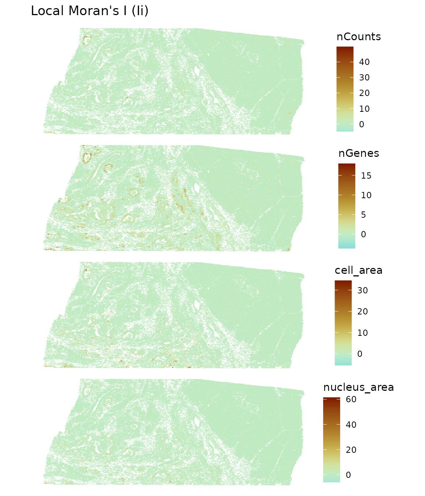
It seems that the glandular areas tend to be more homogeneous, greatly contributing to the global Moran’s I value, but most of the tissue is not very spatially autocorrelated for these metrics. The value is not the only thing computed in local Moran’s I. P-values and types of neighborhoods are also computed. “Type of neighborhood” include cells with low values and neighbors with low values (low-low), low-high, high-high, and high-low, and “low” and “high” are relative to the mean. One can make a scatter plot with the value at each cell on the x axis and spatially weighted average of the cell’s neighbors on the spatial neighborhood graph on the y axis; this is the Moran scatter plot. These neighborhood types are quadrants on the plot. However, when the value doesn’t deviate much from the mean, the neighborhood type might not mean much, but it does seem to highlight some tissue structure. Another caveat is that the mean is from the entire section, while from tissue morphology, there clearly are two very different regions within the section. It would be cool to have a method to better determine areas in the tissue for spatial analysis that can best answer the questions of interest. It might make sense to analyze the sparse and dense regions separately at some point.
localResultAttrs(sfe, "localmoran", "nCounts")
#> [1] "Ii" "E.Ii" "Var.Ii" "Z.Ii"
#> [5] "Pr(z != E(Ii))" "mean" "median" "pysal"
#> [9] "-log10p" "-log10p_adj"
plotLocalResult(sfe, "localmoran", attribute = "pysal",
features = c("nCounts", "nGenes", "cell_area", "nucleus_area"),
colGeometryName = "centroids", scattermore = TRUE, pointsize = 1.5,
ncol = 1, size = 3)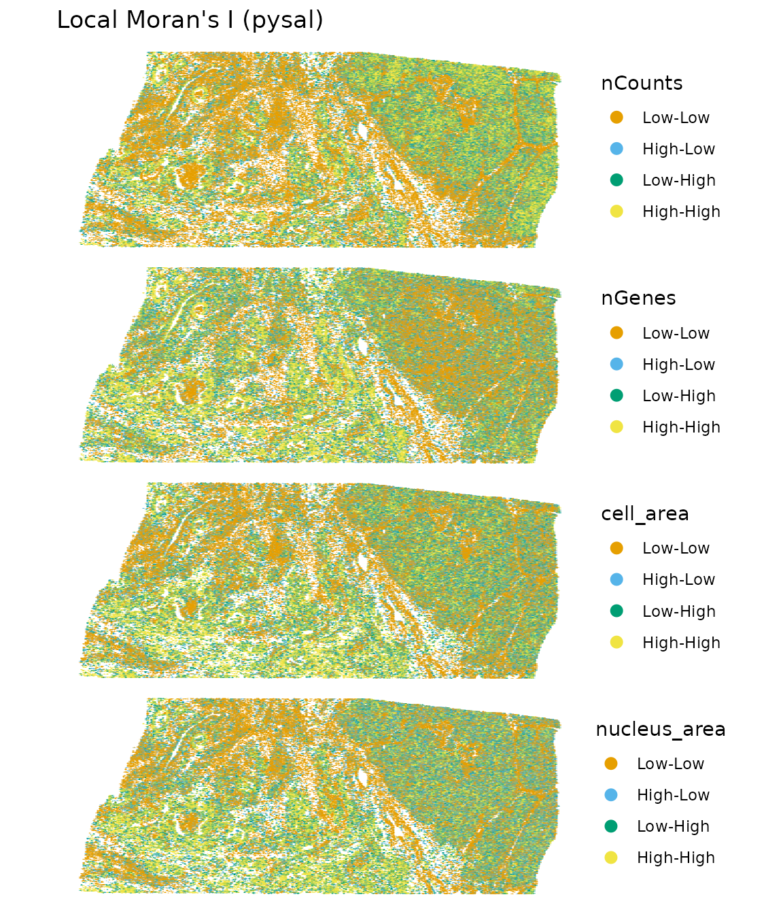
It’s hard to see without zooming in.
plotLocalResult(sfe, "localmoran",
features = c("nCounts", "nGenes", "cell_area", "nucleus_area"),
colGeometryName = "cellSeg", divergent = TRUE, diverge_center = 0,
ncol = 2, bbox = bbox1)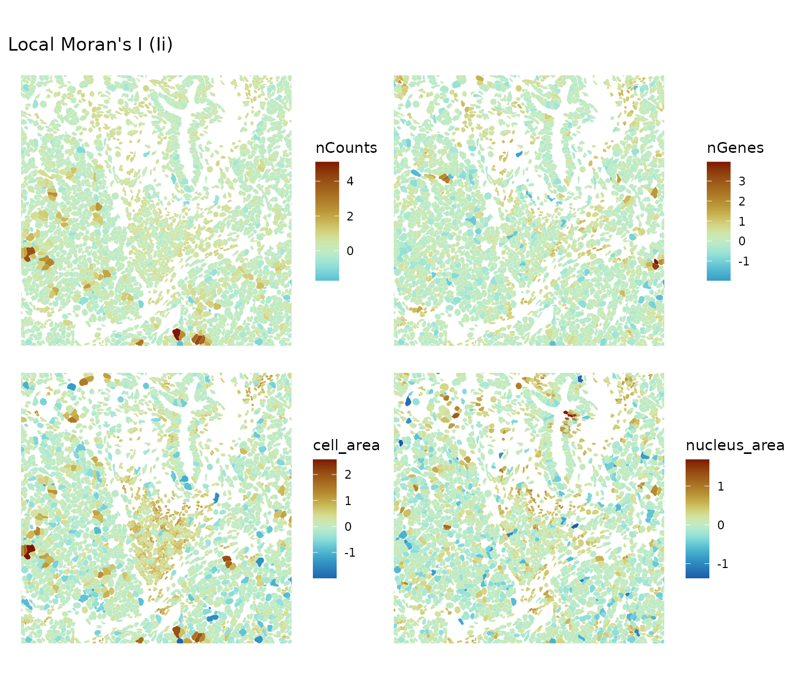
plotLocalResult(sfe, "localmoran", attribute = "pysal",
features = c("nCounts", "nGenes", "cell_area", "nucleus_area"),
colGeometryName = "cellSeg", bbox = bbox1, ncol = 2)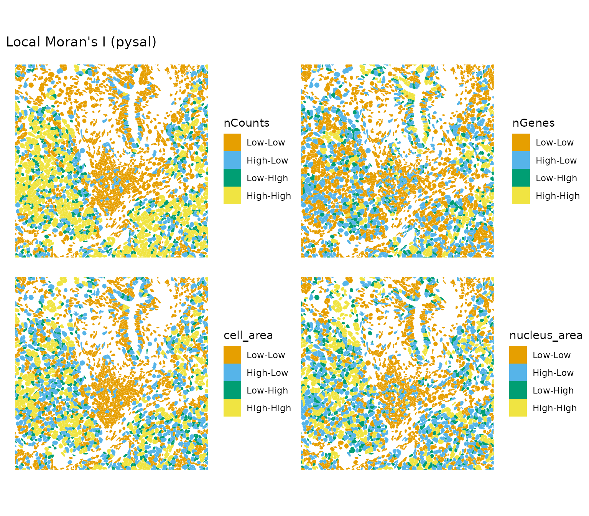
plotLocalResult(sfe, "localmoran", attribute = "-log10p_adj",
features = c("nCounts", "nGenes", "cell_area", "nucleus_area"),
colGeometryName = "cellSeg", divergent = TRUE,
diverge_center = -log10(0.05),
ncol = 2, bbox = bbox1)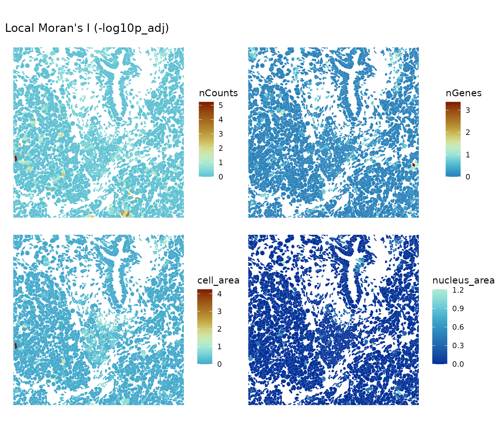
Here the center of the divergent palette is at
and the p-values have been corrected for multiple testing (see
spdep::p.adjustSP()). Warm color indicates “significant”
and cool color indicates “not significant” based on this conventional
threshold. Here in this dense region, for these metrics, local Moran’s I
is generally not significant.
plotLocalResult(sfe, "localmoran",
features = c("nCounts", "nGenes", "cell_area", "nucleus_area"),
colGeometryName = "cellSeg", divergent = TRUE, diverge_center = 0,
ncol = 2, bbox = bbox2)
plotLocalResult(sfe, "localmoran", attribute = "pysal",
features = c("nCounts", "nGenes", "cell_area", "nucleus_area"),
colGeometryName = "cellSeg", bbox = bbox2, ncol = 2)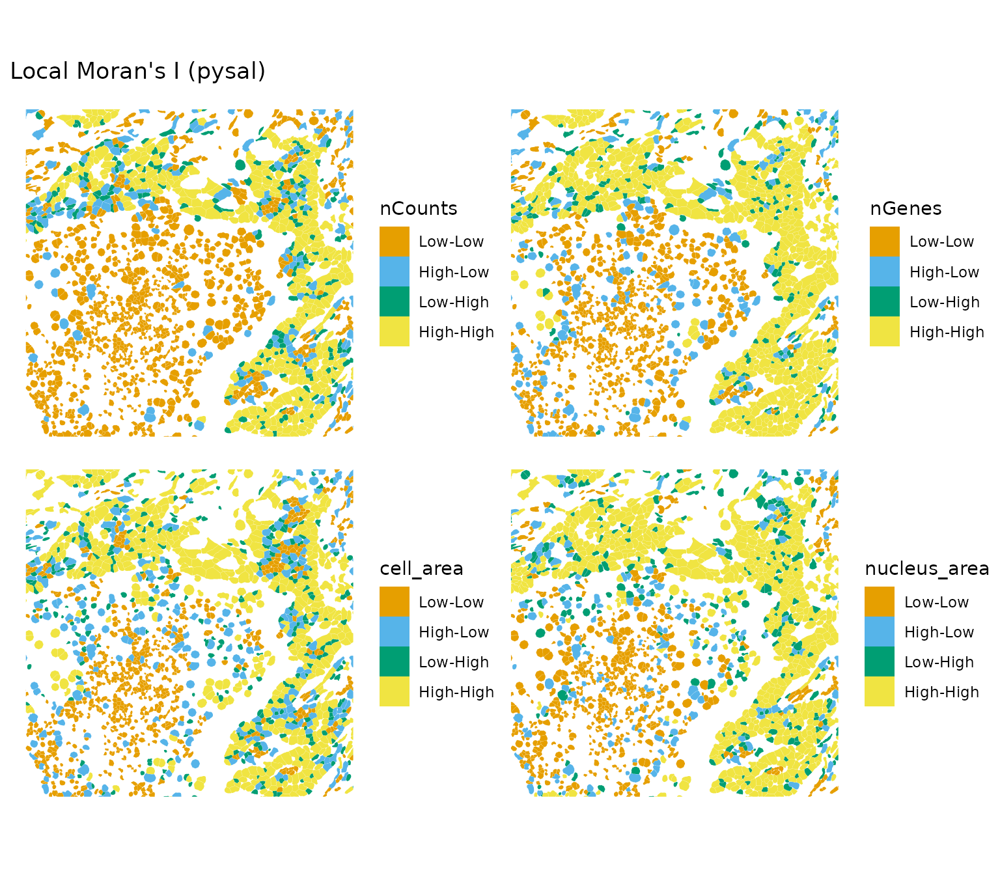
plotLocalResult(sfe, "localmoran", attribute = "-log10p_adj",
features = c("nCounts", "nGenes", "cell_area", "nucleus_area"),
colGeometryName = "cellSeg", divergent = TRUE,
diverge_center = -log10(0.05),
ncol = 2, bbox = bbox2)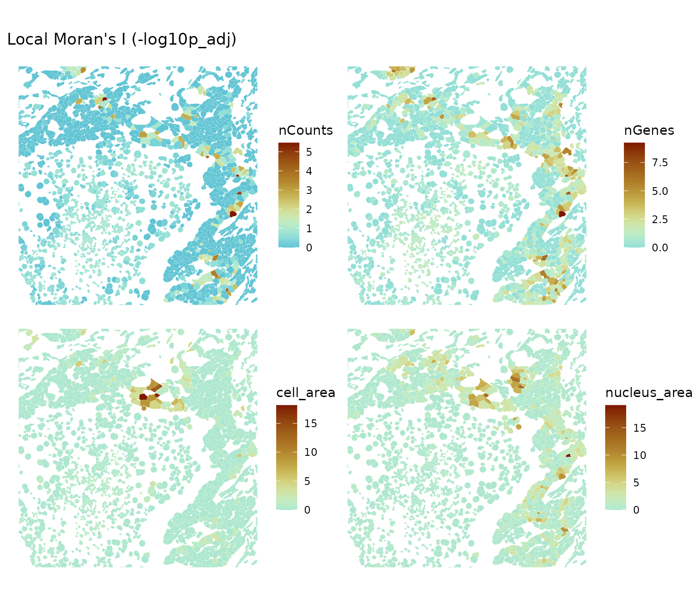
In this sparser region, there’re more areas where local Moran’s I is significant for these metrics. It seems that locally we can have a mixture of positive and negative spatial autocorrelation, though for the most part local Moran’s I is not statistically significant and the significant parts are in the high-high regions. What to make of this?
Moran plot for nCounts
sfe <- colDataUnivariate(sfe, "moran.plot", "nCounts", colGraphName = "knn5")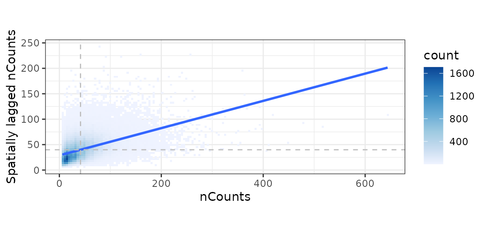
There are no obvious clusters here based on the 2D histogram showing point density in the scatter plot. With W style (the adjacency matrix with edge weights have row sums of 1), the slope of the least square line fitted to the scatter plot is Moran’s I (Anselin1996-mo?).
Moran’s I
By default, for gene expression, the log normalized counts are used in spatial autocorrelation metrics because many statistical methods were developed for normally distributed data and there can be technical artifacts affecting the raw gene counts per cell, so before running Moran’s I, we normalize the data. In the single cell tradition, total counts (nCounts) is treated like a technical artifact to be normalized away, which makes sense given the transcript capture and PCR amplification steps in the single cell RNA-seq protocol. However, as seen above, nCounts clearly has biologically relevant spatial structure, and imaging based technologies don’t have those steps. Furthermore, in imaging based technologies, typically a curated gene panel of a few hundred genes targeting certain cell types of interest is used, while scRNA-seq is usually untargeted and transcriptome wide. Due to the skewed gene panel, nCounts is biologically skewed as well so using it to normalize data can lead to false negatives in finding spatially variable genes and differential expression (Atta et al. 2024).
Sometimes cell area is used when normalizing imaging based data, which makes sense when larger cells have more room for more transcripts and as seen above in the matrix plot, cell area does positively correlate with nCounts. However, as seen in the earlier cell level QC plots, cell size is also spatially structured and seemingly biologically relevant because cells of some types tend to be larger than cells of some other types, though its global Moran’s I is a bit weaker than that of nCounts. Often some cells are larger because more of them get captured in this section and some cells are smaller because less of them are in this section, so there still is a technical component. In (Atta et al. 2024), normalizing by cell area and not normalizing are also examined; here SVG and DE results are more comparable to when using a more representative gene panel, with fewer false positives and false negatives compared to normalizing by nCounts. Due to the technical effect of partial capture of cells in the section, (Atta et al. 2024) recommends normalizing with cell area if it’s reliable. While cell area from XOA v1 with cell segmentations that look like Voroni tessellation doesn’t seem reliable, with multiple fluorescent stains in XOA v2, it seems much better, so we’ll normalize with cell area here while noting the caveat that cell area can be biologically relevant.
sfe <- logNormCounts(sfe, size.factor = sfe$cell_area)Use more cores if available to speed this up. It’s slower here
because the gene count matrix is actually on disk thanks to
DelayedArray and not loaded into memory.
system.time(
sfe <- runMoransI(sfe, colGraphName = "knn5", BPPARAM = MulticoreParam(2))
)
#> user system elapsed
#> 1112.186 2.539 1127.881
plotRowData(sfe, x = "moran_sample01", y = "is_neg")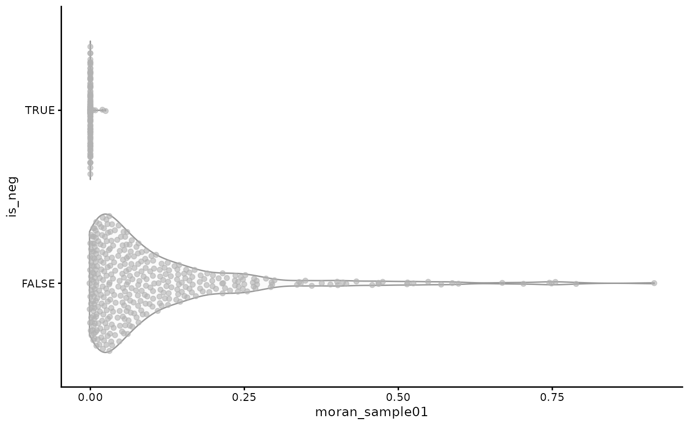
As expected, generally the negative controls are tightly clustered around 0, while the real genes have positive Moran’s I, which means there is generally no technical artifact spatial trend.
What are the genes with the highest Moran’s I?
top_moran <- rownames(sfe)[order(rowData(sfe)$moran_sample01, decreasing = TRUE)[1:4]]
plotSpatialFeature(sfe, top_moran, colGeometryName = "centroids",
scattermore = TRUE, pointsize = 1.5, ncol = 1)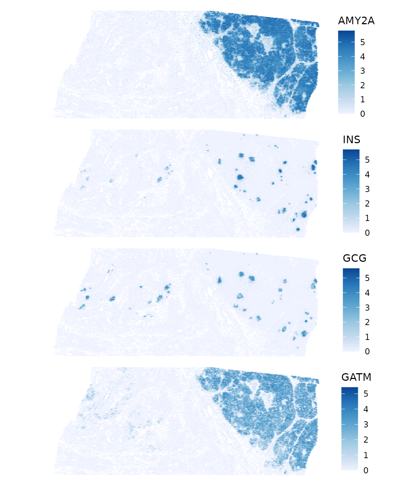
AMY2A is amylase alpha 2A, involved in breaking down starch. INS is insulin. GCG is glucagon. GATM is glycine amidinotransferase involved in creatine biosynthesis. So the dense area have exocrine acini making digestive enzymes and the endocrine Langerhan’s islets making insulin and glucagon. These are very spatially structured. Zoom into a smaller area
bbox8 <- c(xmin = 4950, xmax = 5450, ymin = -1000, ymax = -500)
plotSpatialFeature(sfe, top_moran, colGeometryName = "cellSeg", ncol = 2,
bbox = bbox8)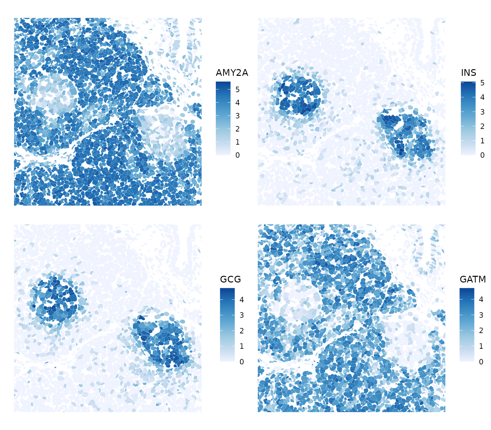
top_moran2 <- rownames(sfe)[order(rowData(sfe)$moran_sample01, decreasing = TRUE)[5:8]]
plotSpatialFeature(sfe, top_moran2, colGeometryName = "centroids",
scattermore = TRUE, pointsize = 1.5, ncol = 1)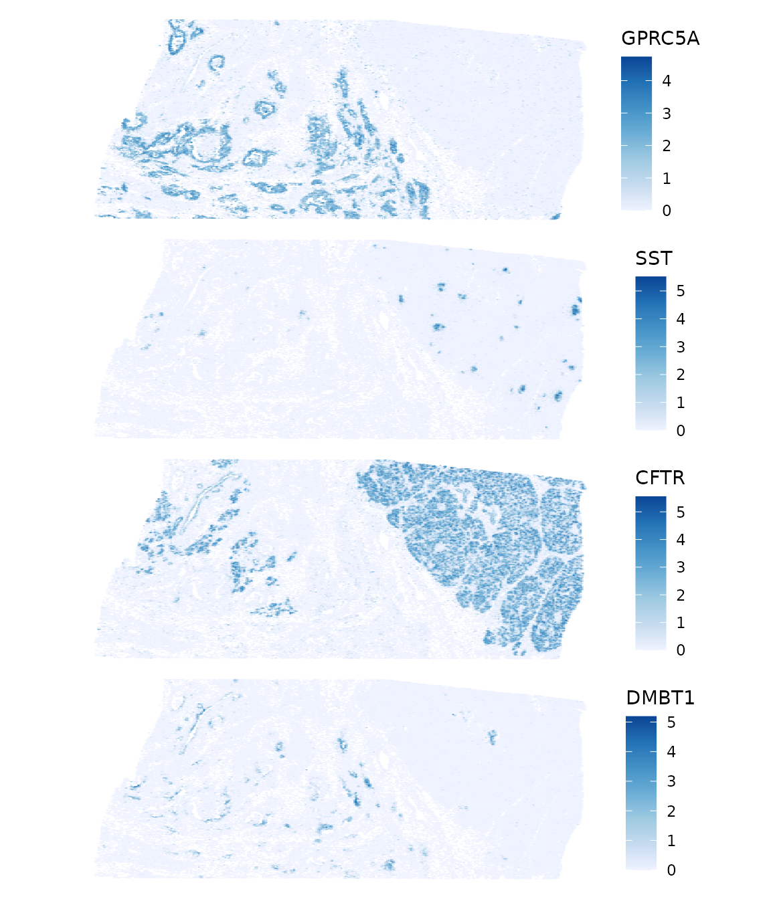
GPRC5A is G protein-coupled receptor class C group 5 member A, which may play a role in embryonic development and epithelial cell differentiation. SST is somatostatin, which is a regulator of the endocrine system. CFTR encodes the chlorine ion channel whose mutation causes cystic fibrosis. DMBT1 stands for deleted in malignant brain tumors 1. “Loss of sequences from human chromosome 10q has been associated with the progression of human cancers”, according to RefSeq. So the sparse region is probably cancerous. Zoom into a smaller area
plotSpatialFeature(sfe, top_moran2, colGeometryName = "cellSeg", ncol = 2,
bbox = bbox2)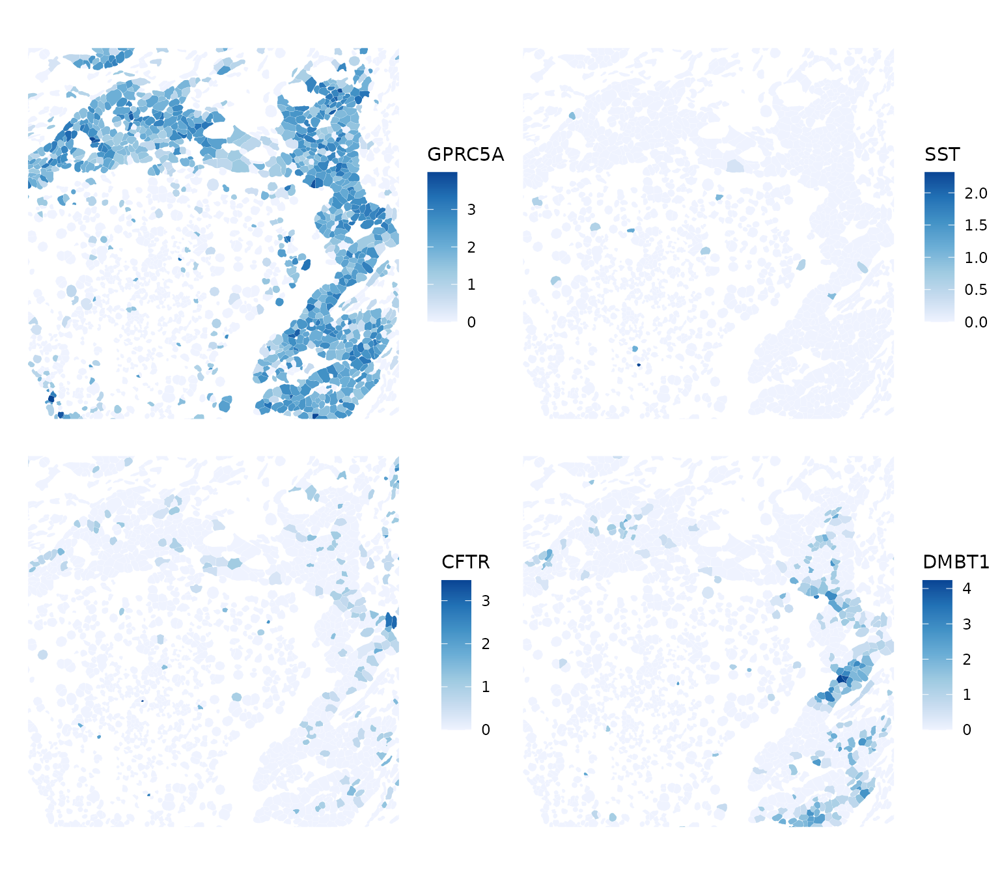
How does Moran’s I relate to gene expression level?
plotRowData(sfe, x = "means", y = "moran_sample01", color_by = "is_neg") +
scale_x_log10() + annotation_logticks(sides = "b")Very highly expressed genes have higher Moran’s I, but there are some less expressed genes with higher Moran’s I as well.
sfe <- sfe[rowData(sfe)$Type == "Gene Expression",]Non-spatial dimension reduction and clustering
Here we run non-spatial PCA as for scRNA-seq data
set.seed(29)
sfe <- runPCA(sfe, ncomponents = 30, scale = TRUE, BSPARAM = IrlbaParam(), ntop = Inf)
ElbowPlot(sfe, ndims = 30)
plotDimLoadings(sfe, dims = 1:8)
spatialReducedDim(sfe, "PCA", 4, colGeometryName = "centroids", divergent = TRUE,
diverge_center = 0, ncol = 1, scattermore = TRUE, pointsize = 1.5)
spatialReducedDim(sfe, "PCA", components = 5:8, colGeometryName = "centroids",
divergent = TRUE, diverge_center = 0,
ncol = 1, scattermore = TRUE, pointsize = 1.5)While spatial region is not explicitly used, the PC’s highlight spatial regions due to spatial autocorrelation in gene expression and histological regions with different cell types. Since PCA finds linear combinations of genes that maximize variance explained, when the genes that explain more variance are spatially structured, their linear combinations are also spatially structured.
Non-spatial clustering and locating the clusters in space
colData(sfe)$cluster <- clusterRows(reducedDim(sfe, "PCA")[,1:15],
BLUSPARAM = SNNGraphParam(
cluster.fun = "leiden",
cluster.args = list(
resolution_parameter = 0.5,
objective_function = "modularity")))Now the scater can also rasterize the plots with lots of
points with the rasterise argument, but with a different
mechanism from scattermore that requires more system
dependencies.
plotPCA(sfe, ncomponents = 4, colour_by = "cluster", scattermore = TRUE)
Plot the location of the clusters in space
plotSpatialFeature(sfe, "cluster", colGeometryName = "centroids", scattermore = TRUE,
pointsize = 1.2, size = 3)
plotSpatialFeature(sfe, "cluster", colGeometryName = "cellSeg", bbox = bbox1) +
plotSpatialFeature(sfe, "cluster", colGeometryName = "cellSeg", bbox = bbox2) +
plotSpatialFeature(sfe, "cluster", colGeometryName = "cellSeg", bbox = bbox8) +
plot_layout(guides = "collect") &
theme(legend.position = "bottom", legend.byrow = TRUE) &
guides(fill = guide_legend(nrow = 2))Since the principal components are spatially structured, the clusters found from the PCs are spatially structured.
Differential expression
Cluster marker genes are found with Wilcoxon rank sum test as commonly done for scRNA-seq.
markers <- findMarkers(sfe, groups = colData(sfe)$cluster,
test.type = "wilcox", pval.type = "all", direction = "up")It’s already sorted by p-values:
markers[[6]]
#> DataFrame with 377 rows and 14 columns
#> p.value FDR summary.AUC AUC.1 AUC.2 AUC.3
#> <numeric> <numeric> <numeric> <numeric> <numeric> <numeric>
#> MS4A6A 1.54756e-170 5.83430e-168 0.728480 0.743662 0.725008 0.688186
#> CD163 1.48909e-148 2.80693e-146 0.713027 0.718190 0.703405 0.680758
#> AIF1 6.69728e-96 8.41625e-94 0.637606 0.694124 0.670373 0.640145
#> FCGR3A 2.49289e-70 2.34955e-68 0.645328 0.643317 0.632489 0.617025
#> MS4A4A 7.05597e-60 5.32020e-58 0.633727 0.640578 0.633061 0.609777
#> ... ... ... ... ... ... ...
#> TM4SF4 1 1 0.152899 0.489888 0.500690 0.501982
#> TMC5 1 1 0.177768 0.177768 0.490913 0.505456
#> TRAC 1 1 0.312213 0.507782 0.506559 0.312213
#> UBE2C 1 1 0.331111 0.331111 0.498855 0.502251
#> VCAN 1 1 0.351751 0.351751 0.460870 0.536997
#> AUC.4 AUC.5 AUC.7 AUC.8 AUC.9 AUC.10 AUC.11
#> <numeric> <numeric> <numeric> <numeric> <numeric> <numeric> <numeric>
#> MS4A6A 0.689521 0.731695 0.728480 0.724667 0.738094 0.730736 0.696289
#> CD163 0.680368 0.710473 0.713027 0.707486 0.713043 0.708168 0.683770
#> AIF1 0.637606 0.681605 0.682232 0.679472 0.692595 0.679824 0.652220
#> FCGR3A 0.624603 0.641296 0.645328 0.636947 0.648485 0.640735 0.626461
#> MS4A4A 0.608129 0.639219 0.633727 0.629561 0.641152 0.636996 0.610286
#> ... ... ... ... ... ... ... ...
#> TM4SF4 0.498836 0.460481 0.152899 0.500159 0.366336 0.494070 0.501890
#> TMC5 0.500076 0.412480 0.138520 0.501989 0.506229 0.497249 0.504688
#> TRAC 0.481514 0.518893 0.512786 0.510173 0.522509 0.519817 0.475692
#> UBE2C 0.501846 0.501722 0.502851 0.502407 0.504580 0.502875 0.503125
#> VCAN 0.515555 0.625376 0.635795 0.577924 0.624523 0.638970 0.498552
#> AUC.12
#> <numeric>
#> MS4A6A 0.718032
#> CD163 0.696584
#> AIF1 0.669220
#> FCGR3A 0.629885
#> MS4A4A 0.625454
#> ... ...
#> TM4SF4 0.500816
#> TMC5 0.498134
#> TRAC 0.492296
#> UBE2C 0.498117
#> VCAN 0.204336The code below extracts the significant markers for each cluster:
genes_use <- vapply(markers, function(x) rownames(x)[1], FUN.VALUE = character(1))
plotExpression(sfe, genes_use, x = "cluster", point_fun = function(...) list())This allows for plotting more top marker genes in a heatmap:
genes_use2 <- unique(unlist(lapply(markers, function(x) rownames(x)[1:5])))
plotGroupedHeatmap(sfe, genes_use2, group = "cluster", colour = scales::viridis_pal()(100))Local spatial statistics of marker genes
First we plot those genes in space as a reference
plotSpatialFeature(sfe, genes_use, colGeometryName = "centroids", ncol = 2,
pointsize = 0, scattermore = TRUE)Global Moran’s I of these marker genes is shown below:
setNames(rowData(sfe)[genes_use, "moran_sample01"], genes_use)
#> GPRC5A CRHBP IL7R CPA3 CFTR
#> 0.7452986745 -0.0005381635 0.2475148484 0.1978744218 0.6687634585
#> MS4A6A TM4SF4 PECAM1 INS AMY2A
#> 0.1457565362 0.2700427034 0.2082672326 0.7887360003 0.9154877143
#> MZB1 VCAN
#> 0.1234801686 0.3757000101All these marker genes except for CRHBP have positive spatial autocorrelation, but some stronger than others.
Local Moran’s I of these marker genes is shown below:
sfe <- runUnivariate(sfe, "localmoran", features = genes_use, colGraphName = "knn5",
BPPARAM = MulticoreParam(2))
plotLocalResult(sfe, "localmoran", features = genes_use,
colGeometryName = "centroids", ncol = 2, divergent = TRUE,
diverge_center = 0, scattermore = TRUE, pointsize = 0)Here we don’t see much local negative spatial autocorrelation compared to positive spatial autocorrelation.
Also zoom into some of the regions
plotLocalResult(sfe, "localmoran", features = genes_use,
colGeometryName = "cellSeg", ncol = 3, divergent = TRUE,
diverge_center = 0, bbox = bbox1)
plotLocalResult(sfe, "localmoran", features = genes_use,
colGeometryName = "cellSeg", ncol = 3, divergent = TRUE,
diverge_center = 0, bbox = bbox2)
plotLocalResult(sfe, "localmoran", features = genes_use,
colGeometryName = "cellSeg", ncol = 3, divergent = TRUE,
diverge_center = 0, bbox = bbox8)Zooming in, it’s interesting to see local negative spatial autocorrelation of some genes in some regions that don’t seem like spatial outliers but seem more to be a pattern, such as VCAN.
We can also compute and plot local Moran’s I on dimension reduction components such as from PCA and NMF. Concordex does clustering on proportion of spatial neighbors from each non-spatial cluster label, which sounds a little like local Moran’s I on the labels. It could be interesting to do clustering on local Moran’s I on select genes or on NMF components.
Session info
sessionInfo()
#> R version 4.4.2 (2024-10-31)
#> Platform: x86_64-pc-linux-gnu
#> Running under: Ubuntu 22.04.5 LTS
#>
#> Matrix products: default
#> BLAS: /usr/lib/x86_64-linux-gnu/openblas-pthread/libblas.so.3
#> LAPACK: /usr/lib/x86_64-linux-gnu/openblas-pthread/libopenblasp-r0.3.20.so; LAPACK version 3.10.0
#>
#> locale:
#> [1] LC_CTYPE=C.UTF-8 LC_NUMERIC=C
#> [3] LC_TIME=C.UTF-8 LC_COLLATE=C.UTF-8
#> [5] LC_MONETARY=C.UTF-8 LC_MESSAGES=C.UTF-8
#> [7] LC_PAPER=C.UTF-8 LC_NAME=C.UTF-8
#> [9] LC_ADDRESS=C.UTF-8 LC_TELEPHONE=C.UTF-8
#> [11] LC_MEASUREMENT=C.UTF-8 LC_IDENTIFICATION=C.UTF-8
#>
#> time zone: UTC
#> tzcode source: system (glibc)
#>
#> attached base packages:
#> [1] stats4 stats graphics grDevices utils datasets methods
#> [8] base
#>
#> other attached packages:
#> [1] BiocNeighbors_2.0.0 tidyr_1.3.1
#> [3] dplyr_1.1.4 arrow_17.0.0.1
#> [5] sf_1.0-19 fs_1.6.5
#> [7] RBioFormats_1.6.0 patchwork_1.3.0
#> [9] scran_1.34.0 bluster_1.16.0
#> [11] BiocSingular_1.22.0 BiocParallel_1.40.0
#> [13] scales_1.3.0 scater_1.34.0
#> [15] scuttle_1.16.0 stringr_1.5.1
#> [17] ggforce_0.4.2 ggplot2_3.5.1
#> [19] SpatialExperiment_1.16.0 SingleCellExperiment_1.28.1
#> [21] SummarizedExperiment_1.36.0 Biobase_2.66.0
#> [23] GenomicRanges_1.58.0 GenomeInfoDb_1.42.0
#> [25] IRanges_2.40.0 S4Vectors_0.44.0
#> [27] BiocGenerics_0.52.0 MatrixGenerics_1.18.0
#> [29] matrixStats_1.4.1 SFEData_1.8.0
#> [31] Voyager_1.8.1 SpatialFeatureExperiment_1.9.4
#>
#> loaded via a namespace (and not attached):
#> [1] splines_4.4.2 bitops_1.0-9
#> [3] filelock_1.0.3 tibble_3.2.1
#> [5] R.oo_1.27.0 polyclip_1.10-7
#> [7] lifecycle_1.0.4 edgeR_4.4.0
#> [9] lattice_0.22-6 MASS_7.3-61
#> [11] magrittr_2.0.3 limma_3.62.1
#> [13] sass_0.4.9 rmarkdown_2.29
#> [15] jquerylib_0.1.4 yaml_2.3.10
#> [17] metapod_1.14.0 sp_2.1-4
#> [19] cowplot_1.1.3 RColorBrewer_1.1-3
#> [21] DBI_1.2.3 multcomp_1.4-26
#> [23] abind_1.4-8 spatialreg_1.3-5
#> [25] zlibbioc_1.52.0 purrr_1.0.2
#> [27] R.utils_2.12.3 RCurl_1.98-1.16
#> [29] TH.data_1.1-2 tweenr_2.0.3
#> [31] rappdirs_0.3.3 sandwich_3.1-1
#> [33] GenomeInfoDbData_1.2.13 ggrepel_0.9.6
#> [35] irlba_2.3.5.1 terra_1.7-83
#> [37] pheatmap_1.0.12 units_0.8-5
#> [39] RSpectra_0.16-2 dqrng_0.4.1
#> [41] pkgdown_2.1.1 DelayedMatrixStats_1.28.0
#> [43] codetools_0.2-20 DropletUtils_1.26.0
#> [45] DelayedArray_0.32.0 xml2_1.3.6
#> [47] tidyselect_1.2.1 UCSC.utils_1.2.0
#> [49] memuse_4.2-3 farver_2.1.2
#> [51] viridis_0.6.5 ScaledMatrix_1.14.0
#> [53] BiocFileCache_2.14.0 jsonlite_1.8.9
#> [55] e1071_1.7-16 survival_3.7-0
#> [57] systemfonts_1.1.0 tools_4.4.2
#> [59] ggnewscale_0.5.0 ragg_1.3.3
#> [61] sfarrow_0.4.1 Rcpp_1.0.13-1
#> [63] glue_1.8.0 gridExtra_2.3
#> [65] SparseArray_1.6.0 mgcv_1.9-1
#> [67] xfun_0.49 EBImage_4.48.0
#> [69] HDF5Array_1.34.0 withr_3.0.2
#> [71] BiocManager_1.30.25 fastmap_1.2.0
#> [73] boot_1.3-31 rhdf5filters_1.18.0
#> [75] fansi_1.0.6 spData_2.3.3
#> [77] rsvd_1.0.5 digest_0.6.37
#> [79] R6_2.5.1 textshaping_0.4.0
#> [81] colorspace_2.1-1 wk_0.9.4
#> [83] scattermore_1.2 LearnBayes_2.15.1
#> [85] jpeg_0.1-10 RSQLite_2.3.8
#> [87] R.methodsS3_1.8.2 hexbin_1.28.5
#> [89] utf8_1.2.4 generics_0.1.3
#> [91] data.table_1.16.2 class_7.3-22
#> [93] httr_1.4.7 htmlwidgets_1.6.4
#> [95] S4Arrays_1.6.0 spdep_1.3-6
#> [97] pkgconfig_2.0.3 rJava_1.0-11
#> [99] scico_1.5.0 gtable_0.3.6
#> [101] blob_1.2.4 XVector_0.46.0
#> [103] htmltools_0.5.8.1 fftwtools_0.9-11
#> [105] png_0.1-8 knitr_1.49
#> [107] rjson_0.2.23 coda_0.19-4.1
#> [109] nlme_3.1-166 curl_6.0.1
#> [111] proxy_0.4-27 cachem_1.1.0
#> [113] zoo_1.8-12 rhdf5_2.50.0
#> [115] BiocVersion_3.20.0 KernSmooth_2.23-24
#> [117] vipor_0.4.7 parallel_4.4.2
#> [119] AnnotationDbi_1.68.0 desc_1.4.3
#> [121] s2_1.1.7 pillar_1.9.0
#> [123] grid_4.4.2 vctrs_0.6.5
#> [125] dbplyr_2.5.0 beachmat_2.22.0
#> [127] sfheaders_0.4.4 cluster_2.1.6
#> [129] beeswarm_0.4.0 evaluate_1.0.1
#> [131] zeallot_0.1.0 magick_2.8.5
#> [133] mvtnorm_1.3-2 cli_3.6.3
#> [135] locfit_1.5-9.10 compiler_4.4.2
#> [137] rlang_1.1.4 crayon_1.5.3
#> [139] labeling_0.4.3 classInt_0.4-10
#> [141] ggbeeswarm_0.7.2 stringi_1.8.4
#> [143] viridisLite_0.4.2 deldir_2.0-4
#> [145] assertthat_0.2.1 munsell_0.5.1
#> [147] Biostrings_2.74.0 tiff_0.1-12
#> [149] Matrix_1.7-1 ExperimentHub_2.14.0
#> [151] sparseMatrixStats_1.18.0 bit64_4.5.2
#> [153] Rhdf5lib_1.28.0 KEGGREST_1.46.0
#> [155] statmod_1.5.0 AnnotationHub_3.14.0
#> [157] igraph_2.1.1 memoise_2.0.1
#> [159] bslib_0.8.0 bit_4.5.0